Introduction
Welcome to the Plotato Engine User Manual
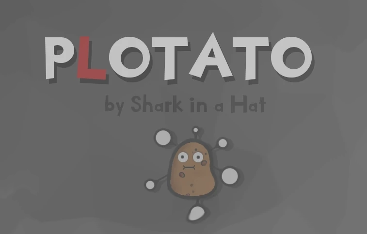
Note: This document is still a Work-In-Progress.
The Plotato is a free and open sourced, visual novel game engine, written as a Single Page App using Python (Brython), HTML, CSS and a minimal amount of Javascript.
It was designed to run from the players hard drive without the need for a server, both on desktop and
mobile (Android) devices, but it can run just as well from a remote server (as a static website, oe PWA) or
embedded in a Electron app (with some extra steps).
The name Plotato is a portmanteau of the words 'plot' and 'potato', as it is focused on quickly and efficiently developing complex plots and compared to 'full fledged' game engine it has the functionality of a potato, being able to do little else beyond displaying images and blobs of text.
Plotato has been strongly inspired by the popular Ren'Py engine, but only in the way the game is presented to the player (full-screen image with a bit of text at the bottom and maybe some pc/npc sprites in between).
Some programming skills are required to make a Plotato game, but usually You won't need to write programs nor functions and you won't need to design algorithms.
You may need to learn how to write Python expressions for example to save some information for later use, like: save.end_of_shift = get_hour() + 8
You may need to learn how to write conditions: (if) get_hour() > save.end_of_shift
You will definitely need to learn how to call Python functions:
set_tce('pool_party', 12, 15, 'map_home', 'remind_party')
For customizing the look of the game you will need to know at least some CSS, but the game uses bog standard, verbose CSS in a everything-is-a-class paradigm. In most cases you can just use right-click anything, bring up the developer tool, mess about with the styling until you get the element to look as you want it to, and copy/paste the changes back into style/default.css.
All the codebase for the engine is provided in plain text format. Nothing is minimized, nothing is obfuscated, every single function and class is documented. The engine has about ~400 lines of HTML, ~3000 lines of Python and ~1200 lines of CSS - including comments and blank lines (+2x as much for all the tools). One could read and understand all of it in one afternoon.
The engine is distributed under a lax, permissive free software license. One can use, copy, modify, and/or distribute this software for any purpose with or without fee, with the only restriction being that a copyright notice isn't removed. There is no GPL poison.
[Back to top]
HTML Structure
The game engine uses div markers for specific elements. Most of them h#ave unique classes and
any div that is manipulated later by the Python script has a unique id.
Elements that are hidden by default have a local style set overriding their display property to none
style="display: none;". This is also how the engine hides elemnts
using the _show( element_id, show=False ) function.
Head
There is very little here beyond what one would normally find in a html document head. Meta tags,
scripts (Brython), css reference. Depending on the version there might be a small helper javascript function
defined here that is used for text-to-speech.
Body
svg
The svg tag at the top is used only to define the filters.
- filter_night
- filter_default
error_box
This div is a placeholder for errors displayed via show_error()
mod_menu
This is a div where mod creators can add their own widgets using add_mod_cfg()
tts_config
This is a div with text-to-speech configuration.
history
This is a placeholder div for displaying the playthrough history.
modal
This is a placeholder/template for modal widgets (pop-ups)
copyright
Container for displaying the version and copyright notice at the bottom
portrait_mode
Used only to display a message prompting the user to flip his device if the game window is tallar then wider.
click_anywhere
An element coverint all available space, used to capture mouse click events after hiding the game controls.
music_player
Placehooder for embedded audio.
spacer
Empty space at the bottom, added to help with the page layout.
container
This is the main game window, all widgets apart from the ones mention above are placed inside this div.
imgs
Images (background images) are rendered into this div
imgs_aux
Used for images other than the main image (parallax scrolling images)
npc_img
The NPC image. This is a single img tag, as only one NPC can be displayed at once.
pc_imgs
PC images are placed here.
imgs_overlay
Placeholder for overlay images (usually rendered on top of pc and npc images)
credits
Used for displaying credits
choice_box
Placeholder for choice buttons
cloths
Th shop/wardrobe UI. Has a lot of elements, see source.
status
Status bar placeholder (for time, money and other? stats)
main_txt
Container for the text. The player usually needs to click on it to progress the story, so appart from the
styling, there are click event listeners attached to this div
left_corner, right_corner
Placeholders for positioning widgets in the right and left top corners.
settings
Container for the settings/options/mods and save/load buttons, see source for details.
questlog
Container for the quest log entries.
rollback
Container for the rollback button and description
overlay
Used for css overlay effects - like splash()
loading
Container onlyused for displaying a loading message
monetize
Container for support/monetize buttons
[Back to top]
Engine Features
In this section you can find a brief description of most of the key features
of the engine. You will learn what they are, what they can be used for and
how to actually use them.
[Back to top]
Background Image
As the name suggest - background images are the images in the background.
In this document the background image may also be called the main image or just image.
You can have only one background image per node (scene) and what image gets
displayed is defined inside the node. Details about how to add an image to a node are
described in the Plot Nodes section and in the Plot Editor section.
Images should be exactly 1280x720 and saved in any format supported by
browsers (png, jpg, webp, etc). If you need your images at a different
resolution you may need to change how PC and NPC images are show, how and
where map markers are shown and probably also change the behavior of overlays.
The background image is always rendered behind the player and NPC images,
it is also usually rendered behind the overlay, but that can be changed
in the overlay specific css (using "z-index: -1;" css property).
Background images are not affected by Filters.
The background image use the 'main_img' css class.
By default when a new image is show it is gradually ( in 0.5 of second) faded in
on top of the old/existing image and once this animation is complete the
old image is removed.
The images are not cached or pre-loaded in any way other
than what the browser (and/or server) provides for any image.
[Back to top]
Parallax Images
Parallax images where primary designed to show scrolling (background) images
with a parallax effect - that is where objects in the distance move slower then
objects nearby.
Parallax images are scrolled across the viewport either horizontally or vertically.
To get a parallax effect you need to have at least two images, with the
background image proportionally smaller compared to the foreground. But you are
not limited to just two images, you can add as many as you like - but keep in mind that
each additional image may degrade performance.
This feature can also be used to show only one image - in that case
it will just be scrolled across the viewport.
To add a parallax image to a plot node you need to call the
parallax_imgs() function (add it as a cmd)
parallax_imgs(*args, **kwargs)
img_list - image or is a list of images to display.
either should be a valid url (preferably relative for offline use)
eg.: parallax_imgs('img/big/lazy.webp')
When multiple images are use they should be passed in back-to-front order,
that is the smallest, most far away image first and the biggest, closes image last.
scroll_dir - should be either 'y' (default) or 'x'
if scroll_dir='y' the image(s) will be scrolled from top to bottom
if scroll_dir='x' the image(s) will be scrolled from side to side
Note: the new implementation uses star arguments, it can be called either with a list/tuple or with comma separated arguments eg:
parallax_imgs(['img/parallax/class_l0.webp', 'img/parallax/class_l1.webp', 'img/parallax/class_l2.webp'])
parallax_imgs('img/parallax/class_l0.webp', 'img/parallax/class_l1.webp', 'img/parallax/class_l2.webp')
parallax_imgs('img/big/lazy.webp')
parallax_imgs('img/parallax/roof_l0.webp', 'img/parallax/roof_l1.webp', 'img/parallax/roof_l2.webp', scroll_dir='x')
replace_parallax_img(new_img_url, layer=
0)
Replace one (1) image in the parallax image stack, without resetting the animation
new_img_url - the url of the new image
layer - index of the image to replace, numbered from back to front, in the same order as passed to parallax_imgs()
Example in editor:
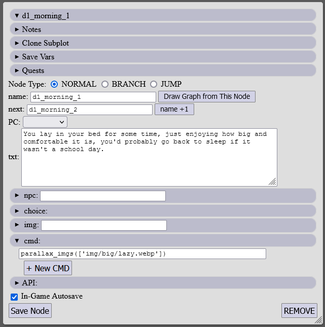
Parallax effect example (notice the clouds in the background scrolling at a different rate compared to the foreground):
[Back to top]
Player Character (PC)
The term Player Character (or PC for short) refers only to the paper doll avatar, an image or series of images displayed on top of the background image.
By convention the player controlled character is always displayed on the left side of the screen and the NPC (Non-Player-Characters) are displayed on the right.
This arrangement can easily be changed by editing the style/default.css style sheet (.pc_img and .pc_imgs classes).
Unlike the NPC image, the PC image is dynamic by default.
It's not a single image but a stack of images depicting the characters body, clothing, facial expression and hair.
Depending on the flavor/version of the engine there can also be additional layers like tattoos, piercings and overlays.
You can add and remove these additional layers as you feel fit, just add (copy/paste) another img tag in the 'pc_imgs' div.
The order in which the img tags are added to that div matters - this is the order the images will be drawn (so nude/base body should go first, before clothing and facial expressions).
The PC also supports svg filters - by default there are 2 such filters provided, the 'default' filter draws a shadow behind the images (respecting transparency)
and the 'night' filter tints the avatar blue-ish (and also draws a shadow). This is a useful feature that allows to recolor the avatar at runtime.
Both PC and NPC are set up in such a way that changing the filter changes both NPC and PC images (without affecting the background) - more on that later.
There is an option to overlay a image on top of the player avatar, this overlay can also use mix-bled-modes as supported by css.
The individual parts/images of the avatar can by programmatically replaced not just once but in such a way that each time the avatar is show the replaced parts will show the correct new image (for instance to replace one hairstyle with another.)
Another dynamic aspect is the clothing system, but that is described in a further chapter.
The PC system is deeply embedded into the engine, it's data files and editor.
Usually all that the game creator needs to do is to select the facial expression for the avatar in the editor
and the engine will do the rest. Selecting no expression means that the avatar should stay hidden.
show_pc(visible=
True, face=
None)
Show the pc avatar image with the current clothing and face
Note: This function is usually called automatically
set_bodypart_img(bodypart, img_path)
Change the image for a bodypart
bodypart - name of the bodypart to replace (same as the img tag id)
img_path - should be the relative path/url to the img
set_body_overlay(img_name=
None,
img_path='img/pc/')
Adds a overlay image on top of the pc image stack
The final url for the image is img_path+img_name, so usually it's enough to provide the image filename.
If img_name is None the overlay is removed.
save.pc_is_wet =
0
save.pc_is_wet =
1
In some versions of the engine one can add a 'wet look' overlay by just setting this one DataStore variable.
add_pc_bodymod(name, img, mod_type=
'piercing')
Add a body modifications image and flag.
name - string used for the flag, can be retrieved by save.get_flags('bodymods')
img - image url for the avatar
mod_type - can be 'piercing' or 'tattoo'
Note: This function will silently fail if PC has 3 or more bodymods of one type
If PC has bodymods, each time a new background image is show the game will also add
a image for every bodymod the PC has, it will use the name/path of the background image as reference
and construct a new url using the pattern img_name+'_'+name+'.'+img_ext
where:
img_name - is the name(url) of the background image without the extension
name - is the name of the bodymod as provided by add_pc_bodymod()
img_ext - is the extension the background image
Eg. if the game shows a background image like:
_show_new_img('img/scene_1/foobar.png')
and the PC has a bodymod like:
add_pc_bodymod('nose_ring', img='img/pc/gold_ring1.png', mod_type='piercing')
The game will add a image on top with the url:
'img/scene_1/foobar_nose_ring.png'.
It works even if that image doesn't exist (at least on mainstream browsers).
num_pc_bodymods (mod_type=
'piercing')
Get the number of body modifications the PC currently has
mod_type - can be 'piercing' or 'tattoo'
[Back to top]
Non-Player Character(NPC)
Non-Player Character ( or NPC for short) refer to the avatar image of the NPC.
By convention the NPC character is always displayed on the right side of the screen and the PC is displayed on the left.
This arrangement can easily be changed by editing the style/default.css style sheet (.npc_img class).
The NPC image are static and there is only ever one NPC image displayed at the same time.
The NPC supports svg filters - by default there are 2 such filters provided, the 'default' filter draws a shadow behind the images (respecting transparency)
and the 'night' filter tints the avatar blue-ish (and also draws a shadow). This is a useful feature that allows to recolor the avatar at runtime.
Both PC and NPC are set up in such a way that changing the filter changes both NPC and PC images (without affecting the background) - more on that later.
The NPC system is deeply embedded into the engine, it's data files and editor.
Usually all that the game creator needs to do is to select the name of the NPC from the editor.
For situations where the NPC image can't be determined beforehand or one needs a dynamic or random image, a f-string can be used in place of the image name. For example one can set a save variable
save.rand_npc_img = randint(5) and then use img/npc/random_npc_{save.rand_npc_img}.png to display one of a few pre-made random npc avatars.
_show_npc(npc_img)
Show or hide (if npc_img is None/False) the npc image
Note: This function is usually called automatically
[Back to top]
DataStore
DataStore is the interface the game uses for persistent data.
The default implementation uses localStorage as the backend, but other mechanisms can be used.
If for some reason the engine can't access the browsers localStorage (write and read back values),
a fallback implementation is used, but in that case the user needs to manually save and load and
all unsaved progress is lost.
By default when the game starts the following DataStore are created:
- cfg (game configuration)
- save (saves and current game state)
- inventory (items/clothes in pc's possession)
- quests (current quests status)
- rollback_* (as above, but used for rollback)
DataStore implements both a dictionary like interface as well as 'doted' access.
For example if you want to store a value for later, you can use
save.some_value = 14
or
save['some_value'] = 14
There's also a add_item() function that has the same functionality:
save.add_item('some_value', 14)
Because of the way the doted access is implemented there are some restricted key names that you should not use. These are:
- __init__
- inner_dict
- __inner_dict
- __getitem__
- _name
- db_storage
- __getitem__
- __setitem__
- add_item
- set_list
- get_list
- append_list
- del_from_list
- is_empty
- items
- clear
- add_flag
- has_flag
- get_flags
- remove_flag
- remove
- to_string
- from_string
- __contains__
- __getattr__
- __setattr__
- __delitem__
DataStore also has a default (zero) value for non-existing keys.
This is made so that you can test values in the storage without the need to first test if the values exist.
For example, you can do if save.some_value: do_something()
even if you never used save.some_value or save['some_value'] (save.some_value will evaluate to 0)
You can test if values have been set using the 'in' operator.
if 'some_value' in save:
You can iterate over the values like you would with any dictionary using the .items() function.
for key, value in save.items()
DataStore can save value types that can be serialized to JSON, that is:
- strings ('some value')
- integers (42)
- floats (3.14)
It is recommended to store boolean values (True, False) as integers (1, 0) and None values as an empty string ('').
DataStore also allows for storing some more complex data structures.
The functions add_flag(), has_flag(), get_flag(), remove_flag() allow setting multiple values (flags) for a single key.
For example:
save.add_flag('visited_places', 'beach')
save.add_flag('visited_places', 'school')
save.add_flag('visited_places', 'cinema')
if save.has_flag('visited_places', 'beach'): has_been_to_beach(True)
The flag functions are implemented using a set.
One can also store and retrieve lists using set_list(), get_list(), append_list().
API:
An instance of the DataStore class needs to be created before one can use any of its functions:
save = DataStore('save')
save.add_item(name, value='')
Set name to value, same as self[name]=value
save.set_list(key, input_list)
Stores the input_list as a string
save.get_list(name)
Returns a value as if it was a list
save.append_list(name, value)
Appends an item to a list stored using set_list(). Creates a new list if needed
save.del_from_list(list_name, value)
Remove an item from a list stored using set_list()
save.is_empty()
Returns True if there are no keys in the db
save.items()
Returns an iterator over the key and values (same as dict)
save.clear(subprefix=
None)
Removes keys and values. If subprefix is not empty only removes keys that starts with subprefix
save.add_flag(key, value)
Adds a flag to a key name.
Use has_flag() to check if the flag has been set.
save.has_flag(key, value)
Checks if value flag has been set under the key name
save.get_flags(key)
Returns a list of flags set under the key name.
save.remove_flag(key, flag)
Removes a flag
save.remove(*keys)
Removes a key(s) from the DB
save[key] = value
Sets the value under the key name (same as dict)
save.key = value
Sets the value under the key name (same as save[key] = value).
save.key
Returns the value under the key name (same as save[key]). If 'key' is not in the DataBase it will return 0. You can use this to increment values that don't exist eg. save.something += 7
save[key]
Returns the value stored under the key name (same as dict)
key in save
Returns True if key is in save (same as dict)
Plot Node (node)
A Plot Node (or just node for short), is the basic, atomic part of the games plot.
Or in other words - it defines what is shown in the game window and knows what node to show next (how to traverse the node graph).
All nodes have names and each node name must be unique (there can't be two nodes with the same name).
The nodes themselves are just collections of optional key - value pairs (that means a node can theoretically by just a name).
The keys in a node have special meanings and are made to help in writing common tasks and actions without the need of writing custom Python code for each node.
name
This is the unique identifier. Each node must have one, and each name must be unique.
next
For 'normal' nodes this points to the next node that will be shown one the user clicks to advance.
The value should be the name of an existing node.
For nodes that show any kind of special interface (shops, wardrobe) the game will advance to the next node once that interface is closed.
Nodes with branches, choices or jumps should not have a next value.
pc
If this key exists, upon visiting the node the PC avatar will be shown.
The value defines what facial expression will be used for the PC.
txt
This is the text displayed upon visiting the node. If a node has a next node defined it should also have something under the txt key
The value may be interpreted as a Python f-string if there are any curly brackets in the text ('{' and '}'). For example:
I have {save.money} dollars in my pocket.
or
I have {str(save.money)+'dollars in my pocket' if money>0 else 'nothing!'}
Because of the way this feature is implemented special care must be taken when using ' and " symbols.
You might need to replace ' with ` in some words (eg write can`t not can't) - the game will reverse this and players will still see "can't".
You might not want to use manual line breaks as the text is evaluated per line.
It is advisable to check if the text is evaluated correctly each time you use this feature.
It is not recommended to add functions with side effects to the evaluated text (use cmd for that).
npc
If this key exists, a NPC image will be shown for this node. The value is the url for the image to use.
img
If this key exists, a background image will be shown for this node. The value is the url for the image to use.
eval_jump_to
If this key exist, its value will be evaluated (using the Python eval() function) and the value returned will be used as a node name to jump to.
For nods that have a eval_jump_to value only the img and cmd key are used - everything else is ignored.
The value of eval_jump_to is not evaluated by the editor and it is commonly used as a way to introduce discontinuity in the plot graph (so that only some and not all nodes are show in the preview).
cmd
This key holds a list of commands (Python statement) to be executed.
They are executed in the order they appear and before any other changes to the game window are made (before the background image is changed, and before pc and npc images are shown).
choice
Choices are explained in a later chapter. This key holds a list of lists where each outer list represents a choice that the player can make and each inner list has the condition, label and target node name.
branch
Branches are explained in a later chapter. This key holds a list of lists where each outer list represents a choice that the player can make and each inner list has the condition, and target node name.
The Editor:
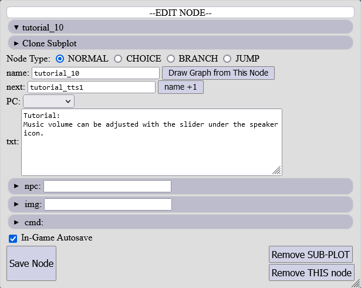
When using the editor (dev/plot_edit.html) the currently selected nod is always displayed on the right side of the window.
Editing a node is just a matter of filling in the form and/or clicking on some buttons.
[Back to top]
Plot Graph (plot)
The plot graph is the collection of all the plot nodes and their connections.
It is stored as a JavaScript object in the file data/plot.txt and the dev/plot_eitor.html is the recommended way to edit it as it shows how the nodes are connected (using arrows and colors) and also gives some hints about the content of the nodes using symbols (hovering over them shows even more informations). This is how the plot looks in the editor:
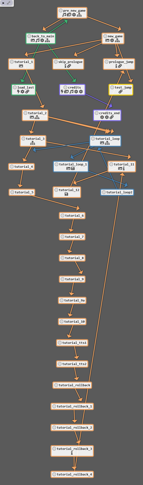
[Back to top]
Choice
A Choice is the basic way in which a player can interact with the game. From the players perspective
a choice node presents itself as one or more buttons in the game window and clicking on any one of them
moves the plot forward in a different direction (or sometimes it's an illusion and all choices lead to the same outcome.
From the creators point of view a choice can have multiple entries and each one has 3 elements:
Condition
A choice condition is a Python expression that needs to evaluate to either True or False (or return a
truthful value, like 1 or 0, None, ""). The expression is evaluated at runtime, when the player reaches
the choice node and if its return value is True the choice is presented to the player (in the form of a button).
It is important that at least one condition in a choice node always evaluates to True, else the player
might get stuck (softlocked) without any option to progress the story.
If a choice should always be visible to the player, one should write True or 1.
Label
The label is simply the text on the choice button.
While the game can handle relatively long labels, the text shouldn't be needlessly long.
Target
Target is the name (id) of the plot node where the game will jump to when the player clicks on the particular choice.
Choice as seen in game:
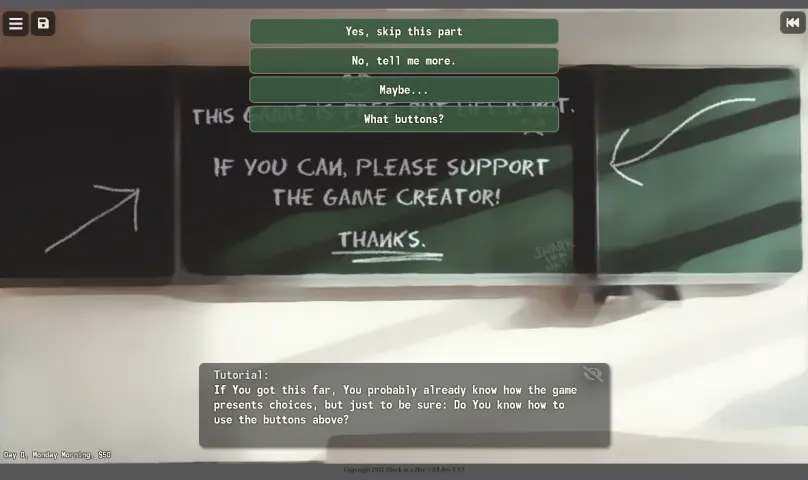
Choice node in Plot Editor:
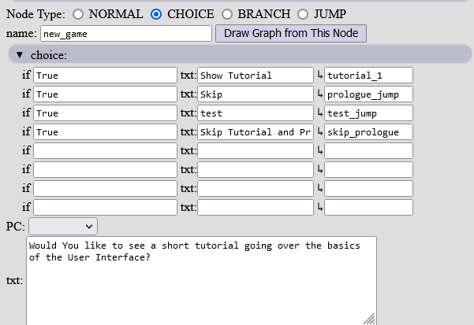
[Back to top]
Branch
A branch is another way to control the flow of the plot. Unlike a choice, a branch offers the player no
interaction and selects the next node based on the conditions programmed by the game author.
Just like the choice node a branch has target and condition fields, but no labels. A choice node
also shouldn't have any text because as soon as the player reaches a branch node the conditions
are evaluated and the game jumps to a new node.
A branch node can also be used to execute commands.
In some cases you would need to wrap commands using
the execute_once() wrapper in case the player saves at
the particular node and the commands get executed
each time the game is loaded.
The game will instantly jump to a target node (after executing the commands),
if there is just one entry in a branch node (preferably
with a True condition), effectively turning the node invisible
to the player and adding a safe place where the author can put commands
without the fear of exploits.
Condition
A branch condition is a Python expression that needs to evaluate to either True or False (or return a
truthful value, like 1 or 0, None, ""). The expression are evaluated at runtime, in the order they appear
in the plot graph (from top to bottom, in the editor). If the first entry evaluates to False, that entry is skipped
and the next entry is evaluated. This process is repeated until a condition evaluates to True (at least one conditions
should always evaluate to True!).
A special value random_branch can be used in place of a condition.
If it's present, the game will select one of the branches at random. This special mechanism expects all
of the entries in a branch node to have the random_branch condition or none at all. The games makes some behind the
scene manipulations such that the same target node won't be selected twice in a row or even again until all other
nodes have been visited. It's not purely random.
Target
Target is the name (id) of the node where the game will jump
to once a condition is evaluated to True.
Branch node in Plot Editor:
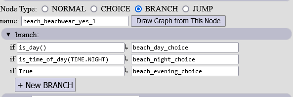
[Back to top]
Jump
Jump is another way to control the flow of the plot.
Unlike choice and branch, jump has only one field - the 'eval_jump_to'.
Like with choice and branch the python expression in the evel_jump_to field
gets evaluated at runtime when the player reaches the jump node, but the key
difference is that the expression must return a valid node name (id).
While a jump node can be used for all sorts of advanced shenanigans, it's primary use is to
introduce gaps in the plot editor. The editor will not evaluate the provided expression
and will not draw any nodes leading away from a jump node.
It is strongly advised to put jump nodes at every plotline end to minimize the amount
of nodes displayed at one time, especially when having multiple, concurrent plotlines.
To make a 'static' jump to another node from a jump node just type in the name of the target node in quotes
(eg. "some_fun_node" or 'some_fun_node').
Jump node in Plot Editor:
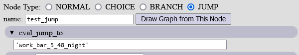
[Back to top]
Command (cmd)
Commands are snippets of code (Python expressions), executed when the player reaches the node and one node
can have multiple commands.
Commands are executed in sequence, in the order they appear in the plot node. They are executed before anything
else - before images are shown, before choice or branch conditions get evaluated, before jumps are made.
It is important to note that commands get executed each time a node is visited - this includes situations
where the player loads a game. To prevent this behavior one can use a 'invisible' branch node with just one branch
(as described in the branch section) or use the exec_once().
The exec_once() wrapper keeps track of what commands where executed for a
particular node and prevents commands from being executed again, if the node has been already visited by
the player. Note: exec_once() require the command to be passed as a string eg. exec_once('save.money+=100')
A full list of commands can be found both at the end of this document as well as in the editor (under the API tab).
Details on how to write a valid Python expression are beyond the scope of this document. Use Google to
find a tutorial about Python if you need further help writing Python code.
cmd in Plot Editor:
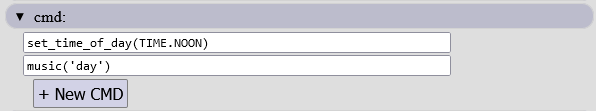
Auto-hints for cmd in Plot Editor:
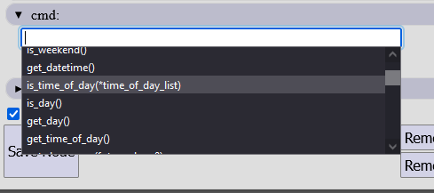
[Back to top]
Filter
Filter refers to a SVG filter applied to both PC and NPC images. These allow to change the appearance
of these elements at runtime without the need to make multiple images.
By default only 2 filters are provided with the engine 'default' and 'night'. The first one only
draws a drop shadow around the sprites and the later also uses a color matrix to tint the sprites blue.
To change the filter use either svg_filter('default') or
svg_filter('night') commands (in a nodes cmd).
The filter will not automatically switch back to the default state, so always make sure
to switch back when you are done using a non-default filter.
Custom filters can be added, one just needs to add a filter element inside a svg tag and give it
a unique id. That id can later be used in the svg_filter() function. Details on how to write
a svg filter are beyond the scope of this document.
PC with 'default' filter:
PC with 'night' filter:
[Back to top]
Overlay
Overlay is a image (or effect) displayed on top of the background image and both PC and NPC sprites.
To add an overlay to a scene (node) use the overlay_img()command.
overlay_img( img_url=
None, img_class=
'overlay_blend_screen', clear=
True ):
img_url - the url (path) to the image to be displayed
if img_url is None - all overlayes will be cleared (removed)
img_class - the CSS class for the overlay element
clear - if clear is True all other overlays will be removed
Multiple overlays can be added one on top of another, just pass clear=False
to keep multiple overlays on the screen when adding overlay layers.
The img_class can be used to create various effects. Rain, fog, smoke, moving background, disco lights to name a few.
The details on how to use CSS to achive such effects are beyond the scope of this document.
Overlays are not cleared automatically, so just like with filters, one needs to remember to
manually clear a overlay once it is not needed. To clear all overlays just call
overlay_img() with no arguments.
[Back to top]
Autosave
The engine provides an autosave feature. Whenever the player visits a node, the game checks if a
autosave flag has been set on the node (by default, the Plot Editor sets this flag on all nodes),
and saves the name of the current plot node along with some extra informations (last know pc stat, npc,
image, etc).
The game also stores a save version, this is meant to help in the event of errors, where some
extra steps are needed when loading from an older (bugged) version. The seve version for new saves is first
set in init_new_save() and later updated whenever the player loads a game
(in the restore_last() function).
If you need to make your own contingency procedure for loading older version saves look to the implementation of the
restore_last() function.
[Back to top]
Rollback
Rollback is a feature that allows the player to move back to a previous choice and try different
paths.
Each node only holds informations on where to go next and procedures (commands) on what
to do once the node is reached. In many cases the commands executed upon reaching a node
cannot be easily reversed - for example, a simple command like
save.something=7 could be impossible to reverse as we have no
informations about the previous value of 'save.something'.
The rollback feature is implemented using somke and mirrors. Whenever the player reaches a choice node,
copies of the current save, inventory and quest DataStore are made and when the player decides he wants to
roll back to his last choice, these copies replace the current save, inventory and quest. It's an automated
quicksave.
[Back to top]
Modal Screens
A modal UI widget is one that blocks access to all other UI elements, it is usually a
dialog box or pop-up.
The engine has some helper functions that make it easy to create custom modal dialog prompts,
but it should be noted that this is an advanced feature and should not be used lightly, as it blocks
the player from accessing the game controls.
Creating a modal usually requires to provide a list of html elements and since there is no convenient way
to do that from within a nodes cmd, it is not recommend to create modal popups using the cmd interface.
_show_modal( header_txt, body_elements, ok_cmd, cancel_cmd=
None, ok_txt=
'OK', cancel_txt=
'CANCEL' ):
header_txt - the text displayed in the header of the popup
body_elements - a list of html DOM elements to be added to the popup
ok_cmd - the command executed when the player clicks the ok button (as a string)
cancel_cmd - the command executed when the player clicks the cancel button (as a string)
if cancel_cmd is None, clicking the cancel button will only hide the modal
ok_txt - text label visible on the ok button
cancel_txt - text label visible on the cancel button
_show_modal_input( text, default_value, ok_cmd ):
Show a modal dialog box with ok/cancel buttons and a text input box
The input field has a id of 'modal_input' if one needs to check what the player typed in.
default_value - the default value present in the input field
ok_cmd - the command executed when the player clicks the ok button (as a string)
Modal example as seen in-game:
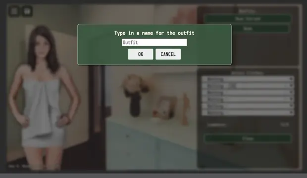
[Back to top]
Quests
Quests refer to tasks that the player is given. They are visible to the player as a to-do list,
and it's up to the game author to best decide how and when to update this quest-log.
set_quest( quest_name, quest_text=
None ):
quest_name - the internal name (id) of the quest. If the name was used previously, this will override the
quest text. If it's a new name/id - a new entry in the quest log will be created.
quest_text - the text visible to the player. If set to None the questlog entry for this quest_name
will be removed.
[Back to top]
Clothes
Clothes are a visual representation of what the PC is wearing. It the default setup only the
Player Character is dynamic and capable of wearing clothes.
Slots are used to determine what the PC can wear at the same time, in the default configuration these are:
- accessory
- top
- bottom
- underwear_top
- stockings
- underwear_bottom
The player can only have one item in any of the slots and each piece of clothing can only occupy one slot
(even if visually they take up multiple slots - like a dress covering the body from neck to knee).
Clothes are drawn in reverse order so first underwear_bottom, then stockings, underwear_top, bottom, top and finally accessory.
For example if the PC has an item is both underwear_bottom and bottom slots - the item in underwear_bottom will be
drawn first and on top of that the item from the bottom slot will be drawn.
It is important to note that 'no item' is also a clothing item in the clothing system, so you may need to
create blank items for every slot with no images.
To help determine what kind of clothing the Player Character is wearing a tag system is used.
Every clothing item can have a list of tags associated with it, some of them may have a special use or
meaning, but in most cases it's up to the author to give these tags a meaning.
The function get_equipped_tagset() can be used to check what tags
the currently worn clothes have.
Because the first game developed using the Plotato engine was a female protagonist visual novel with strong
sexual themes, the engine has an inherent sluttiness rating system. The details on how exactly that
system works are complicated and will probably need a few paragraphs all to themselves - for now it's
enough to say that such a system exists and can be easily removed or disabled if needed.
The engine provides a shop and wardrobe interface that lets the player decide what he/she wants to wear (see 'Shops' below).
The set_clothes() function can be used to give and put on clothes
on the player avatar. give_clothes_by_tag(tag) can be used to give
multiple items at once, but the preferred way to add and remove items is by using the inventory DataStore.
inventory.add_item('some_item_name') will add 'some_item_name' to the players inventory (without equipping it) and inventory.remove('some_item_name') will remove the 'some_item_name' item (without un-equipping it, so never remove items in use).
API:
get_equipped( tag=
None, slot=
None, exclude_tag=
'nude' ):
Returns a list of equipped items
if tag is not None only the items with the tag get returned
if slot is not None only the (one) item in the slot is returned (if any)
no item that has the 'exclude_tag' tag will be returned
get_item_name( item_id, *args ):
Returns the name or names of the given item or items
Note: Parts of the names in parenthesis will be dropped e.g 'Shirt (pink)' -> 'Shirt
For multiple items the names will be comma separated.
give_clothes_by_tag( tag ):
Give all clothes that have the given tag
count_clothes_by_tag( tag, eqquiped_only=
False ):
Returns the number of items the player has with the given tag
if eqquiped_only is True, it checks only equipped items.
has_clothes_by_tag( tag, eqquiped_only=
False ):
Returns True if the player has any items with the given tag
if eqquiped_only is True, it checks only equipped items.
strip_nude( ):
Takes of all the clothes
set_clothes( clothes, *args, **kwargs ):
Gives and equips all the clothes. Additional clothes can be passed
as positional arguments or clothes can be a list
If multiple items in the list share the same slots the last one will be used.
No items are striped before updating the equipment.
Also shows the PC avatar/paperdoll if show_pc (key-word-argument) is True
update_current_clothes_list( ):
Update the current clothes list
restore_clothes( ):
Restore previously saved clothes (from using update_current_clothes_list())
is_exposed( test_expo, logic=
'any', current_expo=
None ):
Returns True/False depending on current clothes and the given test_expo.
Use the values from the EXPO eg.:
test_expo=EXPO.PUSSY+EXPO.PART_BOOBS
if logic == 'any': returns True if at least one bit matches
if logic == 'all': returns True if all bit match
if logic == 'some': uses RNG, returns True more often if more bits match
get_exposure( tags=
None ):
Returns a int (bitmask) used for checking nudity
match_clothes( test_set ):
Returns the % match between the current clothes and the test_set
as a float in 0.0, 1.0 range.
check_uniform( slots, tags, current_items=
None ):
Check if the clothes_set is a valid uniform.
A uniform is valid if all items in 'slots' have
at least one of the tags in the 'tags' set.
get_underwear( ):
Returns a list of currently equipped underwear types, one of:
['bra', 'panties']
['bra']
['panties']
[]
get_equipped_tagset( ):
Returns a set with the tags of the currently equipped clothes
get_clothes_stats( clothes_list ):
Returns a tuple that is the slutiness value of the clothes in the clothes_list
and the name of the uniform type
eg. (7, 'School Uniform')
[Back to top]
Shops
Shops are basically pre-defined list of clothing items. The prices and other stats of items are
defined in data/items.txt so the data/shops.txt file only tells the game what the shops sell.
To open a shop (show the player the shop ui) one needs to call the
shop(shop_id='some_shop') function.
The shop and wardrobe system share some of the UI elements, with the difference being that the
wardrobe screen has player customizable outfits (sets of clothes) where the shop would have a shopping cart panel.
The function change_clothes() that brings up the wardrobe UI
is just a wrapper for shop(shop_id=None).
The engine takes care of remembering what item are bough and sold even if the player closes the game mid shopping. It will also prevent the player from leaving the shop if the value of the items
in the shopping cart exceeds the player's available money.
change_clothes( tag_set=
None, enforce_stats=
1, limited=
False, loopback=
False ):
Opens the wardrobe UI letting the player change clothes. Alias for shop with no items.
tag_set - if it's not None, only items that have at least one tag from the tag_set are shown
enforce_stats - if False, the player will be able to wear any combination of clothes regardless of stats.
limited - if True, the available items will be limited to items from the current clothes list (saved using update_current_clothes_list() or auto-saved when the player closes the shop ui)
loopback - if True, the game will return to the plot node shown before the shop opened (used for cheats/debug)
shop( shop_id=
None, tag_set=
None, enforce_stats=
1, buyback=
False, discount=
None, limited=
False, loopback=
False ):
Show the shop/wardrobe screen.
shop_id is the name of the shop (see data/shops.txt) or None (for wardrobe)
tag_set - if it's not None, only items that have at least one tag from the tag_set are shown
enforce_stats - if False, the player will be able to wear any combination of clothes regardless of stats.
buyback - if True, the PC can sell all her clothes to the shop, else only the items in the current shopping session (in the shopping cart) can be returned.
discount - all shop prices are multiplied by 'discount' (rounded down)
limited - if True, the available items will be limited to items from the current clothes list (saved using update_current_clothes_list() or auto-saved when the player closes the shop ui)
loopback - if True, the game will return to the plot node shown before the shop opened (used for cheats/debug)
Wardrobe UI in-game:
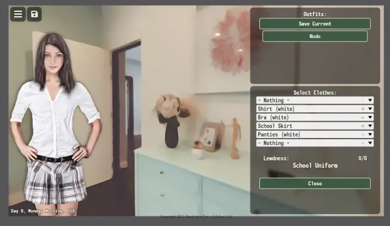
Shop UI in-game:
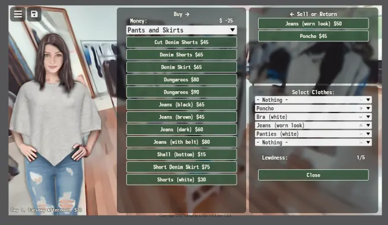
[Back to top]
Map
The map system uses a static background image for the map and dynamic markers/point of interest (poi).
The player can move freely between the POIs on the map by clicking on any of the markers while the
map screen is visible.
The map offers map events (random encounters) that can trigger when moving around the map, either
based on chance or custom trigger conditions (see 'Map Events' section below).
By default the map expects 3 images for the background - one for the day, one for the night and one
for dusk and dawn (img/map.webp, img/map_dark.webp and img/map_dusk.webp).
To take the player to the map screen use the show_map() function.
It is recommend that a node using this command has no images, pc, npc nor a next node defined.
In cases where the author wants to limit the available choice of POIs or show special POIs that would normally
be hidden, one can use the additional parameters in the show_map() function.
show_map( poi_list=
None, show_known=
True ):
Shows the map screen updates the map pins POI
poi_list - None or a list/tuple of POI names to be shown on the map
show_known - if False, the map will only display the POIs listed in poi_list
POI
The points of interest (POI) are stored in data/map_poi.txt, where each POI has it's label, icon,
target (plot node name/id), name and coordinates defined.
POIs are by default hidden to the player and need to be manually added to the list of known
places before the player will be able to see any of them. This is best done using the
add_poi('poi_name') function, where the poi_name is the name of
the poi as defined in data/map_poi.txt.
If needed POIs can also be removed (or at least hidden from the player) using the
del_poi('poi_name') function.
Map as seen in-game:
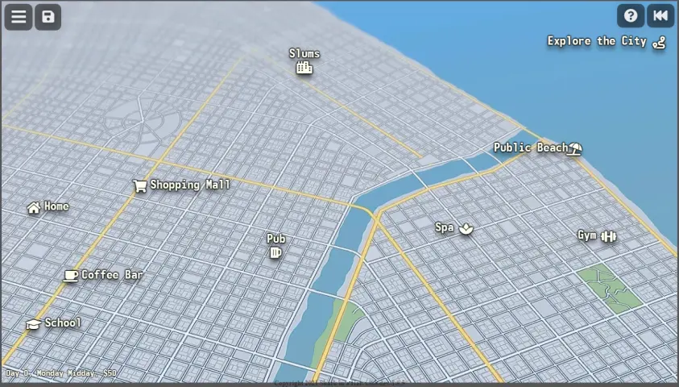
[Back to top]
Map Events
In most cases, when a player clicks on a map marker the game will simply jump to the target plot node
defined in data/map_poi.txt for that POI, but that may not always be true.
Before jumping to the target node the game first calls the
_get_map_event(from_poi, target_poi) function to check if there is a map event.
Depending on the version of the engine there may or may not be hardcoded map events that may send the player home
if wondering late at night or without any pants on. When making Your own game You most likely need to at least
look into the details on how that function is implemented.
In cases where You never want to trigger any map events when the player clicks on a map marker, you
need to set up Your POIs in a specific way. If a POI target does not start with a 'map_' prefix all map
events will be ignored whenever the player clicks on that POI.
Apart from the hardcoded events _get_map_event(from_poi, target_poi)
may also return random events or dynamic map events.
Dynamic map events
Dynamic map events can be set at runtime using the
set_map_event( target, from_poi=None, target_poi=None )
function. The 'target' argument must always be provided (it's the target node name/id), but both from_poi and target_poi are optional.
If just from_poi is provided the event will trigger when the player leaves that POI heading for any destination.
If just the target_poi is provided - the event will trigger when arriving at the given POI.
If both from_poi and target_poi are provided - the event will only trigger when the player
moves from the from_poi to the target_poi.
There can be multiple map events set, but obviously only one can trigger at any given time. Their priority is as followed:
- Event with no from_poi and no target_poi
- Event with from_poi equal to current location and no target_poi (happens as PC leaves a place)
- Event with both from_poi and target_poi that match where the PC is going from and to (happens on route)
- Event with no from_poi but with target_poi equal to where the player is going (happens when PC arrives)
Dynamic map events are always one-shot, as removed as soon as they are triggered. If the need arises to manually delete a event that didn't trigger yet - one can use the
remove_map_event(target, from_poi=None, target_poi=None)
The game checks for dynamic map events after checking the hardcoded events and before checking random events.
Random Map Events
Random map events can be defined in data/map_events.txt.
The value saved in save.map_event_chance determines how often
random map events can happen. Any value between 0 and 100 are valid and 0 means never, 100 means always
When the engine decides that a random map event should happen, it takes the list of all possible events,
removes the ones that don't match the current game state (wrong time of day, wrong from or to nodes,
wrong clothes, failed custom conditions, etc) and picks one of the events at random, using the individual
events chances as weights.
Each time a random event triggers it's weight(chance) gets reduced and so the more a event happens
the less likely it is to happen again. There's also a mechanism that prevents the same event from
triggering twice in a row.
[Back to top]
Time
Time is internally stored as the number of hours from the start of the game.
Each in-game day is divided into 6 periods (time-of-day):
- 0 Night (00:00 - 03:00)
- 1 Morning (04:00 - 07:00)
- 2 Noon (08:00 - 11:00)
- 3 Midday (12:00 - 15:00)
- 4 Afternoon (16:00 -19:00)
- 5 Evening (20:00 - 23:00)
The in-game clock can be advanced by one or multiple hours or one can skip to a desired time-of-day.
Special care must be taken when advancing the clock to a specific time-of-day, as not to skip to the next
day by accident (eg. skipping to noon when it's already midday or later could move you to the next day
skipping over both night and morning).
API
CONSTANTS:
TIME.NIGHT =
0 # 0-3
TIME.MORNING =
1 # 4-7
TIME.NOON =
2 # 8-11
TIME.MIDDAY =
3 # 12-15
TIME.AFTERNOON =
4 # 16-19
TIME.EVENING =
5 # 20-23
TIME.MONDAY =
0
TIME.TUESDAY =
1
TIME.WEDNESDAY =
2
TIME.THURSDAY =
3
TIME.FRIDAY =
4
TIME.SATURDAY =
5
TIME.SUNDAY =
6
get_hour( ):
Returns the current hour
get_weekday( ):
Returns the day of the week as an int
is_weekday( weekday ):
Returns True if today is 'weekday
eg.: 'is_weekday(TIME.MONDAY)
To test if it's a 'work day' use 'not is_weekend()
is_weekend( ):
Returns True if it's SATURDAY, SUNDAY or FRIDAY AFTERNOON
get_datetime( ):
Returns (day, hour)
get_day( ):
Returns the current day number (starting from 0)
is_time_of_day( *time_of_day_list ):
Returns True if the current time of day is in the time_of_day_list
eg: 'is_time_of_day(TIME.MORNING, TIME.NOON)
is_day( ):
Returns True if it's MORNING, NOON, MIDDAY, or AFTERNOON
get_time_of_day( ):
Returns the time of day as an int
set_hard_datetime( day, hour ):
Set the in game time, ignoring everything
get_day_name( future_day=
0, exact_day=
None ):
Returns the (string) name of the current day
if future_day is provided it returns the name
of the day future_day days away
get_time_of_day_name( use_in_at=
False ):
Returns the time of day as a string
set_time_of_day( time_of_day ):
Sets the time of day, (usually) moving the time forward.
Note: The actual time is set to the first hour in the give time period,
this may turn the clock back by up to 3h!
eg. if it's 7AM in the morning and you call
set_time_of_day(TIME.MORNING) it will become 4AM
progress_time( amount=
1 ):
Moves the in-game clock by amount hours (int),
also displays the current time/date in the status div
[Back to top]
Time Critical Events
Time Critical Events (TCE) are events that trigger at a pre-defined time, when the player travels using the map (or at some specially constructed plot nodes).
If a TCE is set, the in-game clock will not advance past the time when the event should happen (unless using set_hard_datetime() or manually changing save.time).
Out of map node setup for TCE
If you're using the TCE system and have places in the node graph where time is skipped forward, but you don't return to the map screen afterward - you might want to set up some extra nodes that will check for time critical events after visiting a node that calls progress_time().
Checking for events
Make a Branch node with one of the conditions being get_tce() is not None. If this condition is evaluated to True, you have a TCE to go to - but before pushing the player to the map screen, you might want to check if the event should maybe take place where the player currently is.
Checking event destination
If you know that a TCE is schedule to happen now, you can check where it should take place and compare that to the current location: get_tce(arg='map_poi') == 'some_poi_name'. You can also use the save variable 'current_location', that gets updated each time the player moves via the map - of course if the player never moved via the map,
moved about using some other way, or had a random encounter while traveling - the 'current_location' may not always be reliable get_tce(arg='map_poi') == save.current_location.
Manual trigger
If you determined that the player already is where the event should happen, you can trigger the event using a jump node (eval_jump_to) with: get_tce(arg='target')
Clean up
TCE are not automatically removed if not triggered from the map, so always make sure that you call remove_tce() in the first plot node of the event.
API:
set_tce( target, day, hour, map_poi, map_redirect ):
Set a Time Critical Event (tce) that will start on the given 'day' and 'hour'.
'target' is the name of the plot node that the player will jump to.
the event will trigger when moving via the map, the map_poi must be one of the known Points Of Interest.
When the player clicks it at the right time ('day', 'hour') it will jump to the 'target' plot node.
Clicking any other poi will jump to 'map_redirect'
If a TCE is set, the in-game clock will never (normally) progress past day*24+hour,
until the event is resolved.
Only 1 (one) TCE can be set for a given day, hour.
remove_tce( day=
None, hour=
None ):
Removes (cancels) a TCE.
Called automatically when a TCE is triggered from map.
If day is None and hour is None the current time (save.time) is used
get_tce( timestamp =
None, arg =
None ):
Returns the list [target, day, hour, map_poi, map_redirect]
for a TCE with the given timestamp (day*24+hour)
if timestamp is None - the current time (save.time) is used
if arg is one of ['target', 'day', 'hour', 'map_poi', 'map_redirect'], the function will return just the one value
if there is no TCE with the timestamp - returns None
[Back to top]
Audio
The engine provides a way to play back audio using the browsers audio player.
The current implementation only allows to play one sound at a time and it is recommended to
provide audio in mp3 format, because support for other audio formats varies from browser to browser.
While the volume can be changed programmatically, it is advised to let the end user decide at what volume to play to audio.
Note: Some (if not all) browsers will not allow to play audio until the player interacts with the page (clicks a button), therefore it is impossible to automatically play background music on the first screen (main menu) when the game first loads.
music( name, loop=
True ):
Alias for play_music(url='audio/'+name+'.mp3', loop)
name - name of the audio file from 'audio/', without the extension.
loop - if True, the sound will loop forever.
stop_music()
Stops the currently playing music (if any)
play_music( url=
None, loop=
True ):
Play a music(.mp3) file using the browsers build-in player
url - the url of the audio file to play
loop - if True, the sound will loop forever.
[Back to top]
Text to Speech (TTS)
If run in a browser/operating system that provides Text-To-Speech capabilities (using the Web Speech API), the engine can perform text to speech synthesis.
The TTS implementation is not designed with ease of access in mind. It will not read button labels,
it will not read actor names, it will not give descriptions of scenes nor images - it will only read what the characters would say.
TTS is designed so, that each actor in the game can have it's own distinct voice. Unfortunately
there isn't one set of voices available on all systems, so if a player wants to use this feature, he needs to manually assign voices to all the actors in the game.
The data file 'data/voices.txt' stores a list of known actors under the name 'known_voices'. For every item in that list the game will create a widget allowing the player to set a voice for that one actor. The widget will not display a name, but a small portrait to avoid potential spoilers.
The game expects the portraits in 'img/portrait/' saved as .webp files with the name of the file identical to the name of the actor.
Actor names
The game expects the first line of any text in a txt field that ends with ':' to be a actor name eg. Some NPC: - if such a pattern is detected, the game turns that first line into lowercase letter and strips any non-alphanumeric characters to create a internal representation of the actor name - using the previous example Some NPC: would get turned into somenpc.
If there is a item on the 'known_voices' list in 'data/voices.txt' that matches the actor name as constructed above, then the game will synthesize text-to-speech using a voice that the player assigned to that actor.
Speaker Alias
If there is no known voice that matches the actors name, the game checks another variable defined in 'data/voices.txt' - the 'speaker_alias'.
'speaker_alias' is a dictionary that holds alternative actor names. If we had 'somenpc' in 'known_voices', but we also want a npc named Some Other NPC: to also use that name, we would have to add 'someothernpc':'somenpc', to the 'speaker_alias' dictionary.
Default voice
If the game can't find a voice for the current blob of text, a default voice is used. That default voice is called 'default' and it also can be customized by the player (unless removed from the 'known_voices' list - do not remove 'default' from the 'known_voices' list).
In-game TTS setup:
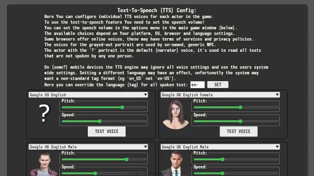
[Back to top]
Mods
The engine allows for custom content mods to be loaded.
Mods are Python scripts that are executed at the end of the game initialization. They are stored in the 'data/mods.txt' data file and can be loaded using the dev/mod_manager.html tool.
Because of how Python works, mods can change anything and everything. Change functions, modify data, add or remove widgets etc.
Mods can be potentially dangerous to the end user, but since the game is running in a browser provided sandbox - the risk is minimal. Mods can redirect to malicious sites or prompt the user to save executables to the hard drive, but can't do much without active user input or interaction.
[Back to top]
Customizing Your Game
Before You start writing your own game You should
take a minute to customize a few elements in the
index.html file. All the places you need to edit
are marked with '#CHANGE_HERE' in a comments, so
even if the line numbers change in future version,
these elements should still be easy to find.
The HTML
The changes needed to make in the markup part of the
engine are quite simple and focused around credits
and copyright notices.
You will most likely want to add your name or company
name to the page meta-data, copyright notice at the bottom,
change the title and perhaps add or change some buttons on the title screen.
Here are some screens taken from a text editor showing
what to look for and what to change. Details on how to write
and modify HTML code is beyond the scope of this document.
Meta-data. Add and/or change whatever you need.
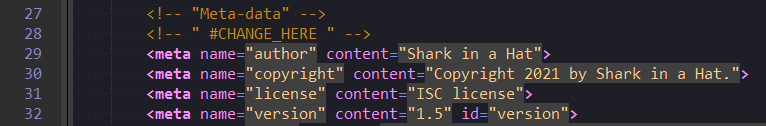
Game specific style sheet. If you have some custom css
(for example for overlay effects or animations) you can
add it to a separate file so as no to mess with the original engine
stylesheet. Deleting it and putting everything in one file also works.
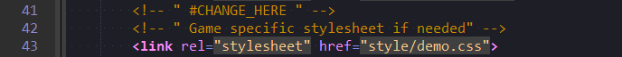
Game title. Self explanatory.
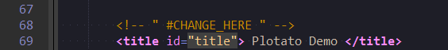
The monetize div is meant to hold clickable buttons, that would take
the user to outside webpages or display some modal screen with extra info
on how to support the game creators. You can remove these if you don't
intend on using this feature or add your own. Note that you will need
to write your own CSS styling for your custom buttons and bind events
so that something happens when the user clicks on them - you'll see how a bit lower.
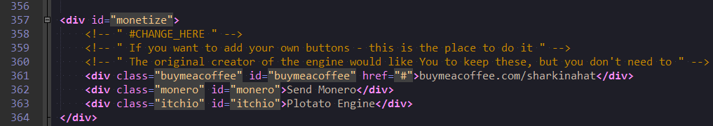
The copyright notice is just a bit of texted displayed at the bottom of the page.
Here you can customize what it says. Note that by default the engine will add a
version number at the end.
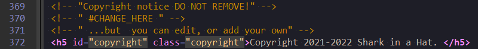
Python
Changes in the python script may be a bit more challenging,
but you don't need to know how to write a python program,
just how to change some letters.
Data Storage. This is the interface for saving and loading game states from
the browsers memory (local storage). There's more info on this in
later parts of this document. On Chrome based browsers all games (and apps)
running locally (not from a web server) share the same space, so to
avoid one game (app) from overriding data from another we use a prefix
to store the data under a unique name. The default prefix is usually
'plotato_' but as show on the screen this may vary. Replace the string
'plotato_demo_' (or 'platoto_') with a prefix that will be unique to your game.
Remember to keep it between the quotation marks.
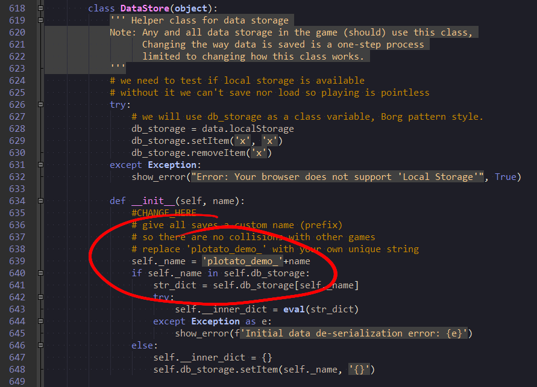
Default values for new save. init_new_save() is a function that is (should) be
called when a player starts a new game. Here you should reset (clear) the
data in old saves and set default values for the rest of the game. The example
below shows how to set up things like starting date and time, money, items (clothes),
known places, etc.
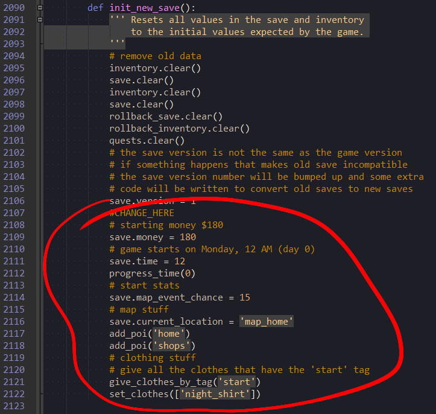
Here, on the first line you can see how the buttons in the monetize div (mentioned above)
are bound to functions. Or in other words - what happens when the user clicks
on any of them. doc['buymeacoffee'] tells the script that we want to do
something with a element with the id='buymeacoffee' and the rest of the line
defines what we want to do with it. You don't need to understand all of it,
just knowing it will open a URL (website) under the address 'https://www.buymeacoffee.com/sharkinahat'
is enough. To make your own button open the website you want just replace the URL (and/or element id).
The next few lines show how you can set up a modal (full-screen pop-up).
The details how a modal works are described further in this document.
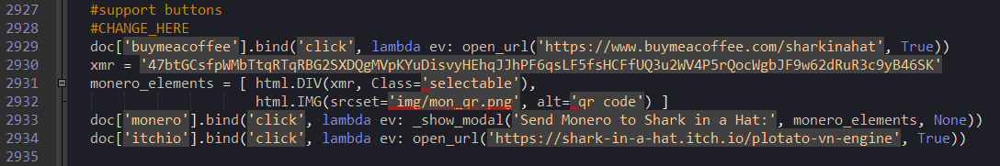
Title screen. This is the part of the script that defines what is shown when
the game starts. It has reasonable defaults, but if you want to name your
plot nodes differently or add other buttons on the title screen - here is the best place to do so.
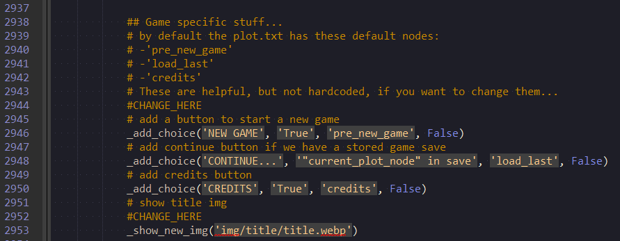
[Back to top]
Directories Structure
These are the basic files that the engine uses, along with a brief description of their purpose (in brackets).
- audio (music/sounds)
-
brython (Brython implementation)
- brython.js
- brython_modules.js
- data (data files)
- items.txt
- map_events.txt
- map_poi.txt
- mods.txt
- plot.txt
- shops.txt
- supporters.txt
- version.txt
- voices.txt
- dev (developer tools)
- bug_tool.html
- item_editor.html
- item_maker.html
- make_datalist.py
- mod_manager.py
- plot_edit.html
- shop_editor.html
- font (fonts)
- fa-solid-900.ttf
- monofonto.ttf
- img (images)
- mods (third party mods)
- style (CSS stylesheets)
- index.html (main game file)
[Back to top]
Data Files
The engine makes use of a few data files, and while technically all of these files contain (or may contain)
code, we will refer to them as data.
The data files use a txt extension, but they all are in fact JavaScript source files. Because of
the limitations of Brython, one can't (easily and reliably) read the content of arbitrary files,
therefore the data is stored in easy to import JavaScript files.
The .txt extension is used because some browsers are funny about saving .js files
items.txt
This file stores the clothing in a dictionary named 'items'. It's data structure looks like this:
var items = {
"item_id":{
"name":"Some Item Name",
"img":"img/pc/debug_sack.png",
"slot":"top",
"tags":['clothes_top', 'clothes_bottom', 'some_other_tag'],
"slutty":0,
"value":100,
},
"other_item_id":{
"name":"Some Item Name",
"img":"img/pc/debug_sack.png",
"slot":"bottom",
"tags":['clothes_bottom', 'some_other_tag'],
"slutty":5,
"value":10,
},
};
map_events.txt
This file defines events that can occur randomly when traveling via the map.
var map_events = [
{'from':'', 'to':'', 'time_of_day':'', 'chance':0, 'slut_x':0, 'eval':'True', 'target':'', 'clothes': [] },
];
map_poi.txt
This file defines all points of interest on the in-game map, including hidden ones.
// ['label', icon', 'target', 'name', x, y ]
//id:0 1 2 3 4 5
var poi = [
['Explore the City ', 'f4d7', 'map_explore', 'explore', 1245, 88],
];
mods.txt
This is a file automatically generated by the mod_manager.html and controls what
third party mods are loaded by the game. It contains the source code of loaded mods
and might not be very human-readable.
plot.txt
The main data file containing the plot graph.
var notes = "";
var plot = {
"pre_new_game" : {
"txt" : "The game uses an auto-save system, starting a new game will {RED('ERASE ALL AUTO-SAVES')} (but not manual savefiles)! Do You want to start a new game? ",
"no_save" : 1,
"choice" : [["True", "Start New Game", "new_game"], ["True", "Cancel", "back_to_main"]],
"cmd" : ["music('like_the_synth')", "parallax_imgs(('img/parallax/class_l0.webp', 'img/parallax/class_l1.webp', 'img/parallax/class_l2.webp'))"]
},
"new_game" : {
"txt" : "Would You like to see a short tutorial going over the basics of the User Interface? ",
"img" : "img/title/title_free.webp",
"choice" : [["True", "Show Tutorial", "tutorial_1"], ["True", "Skip", "prologue_jump"]],
"cmd" : ["init_new_save()"]
}
};
shops.txt
This file lists what items are available in what shops.
var shops = {
"dress_shop":[
"dress_sun_lila",
"cone_dress",
"santa_micro_skirt"
],
"other_shop":
["some_item",
"pants"
]
};
supporters.txt
This file contains the text for the 'credits' slideshow.
var credits = ['CREDITS',
'CREATED BY:\nShark in a Hat',
'STORY BY:\nShark in a Hat',
'ART BY:\nShark in a Hat',
'PROGRAMMED BY:\nShark in a Hat',
'POWERED BY:\nThe Plotato Engine',
'POWERED BY:\nBrython'
];
version.txt
This little file only contains one value - the current version of the data files. It's used
to display the game version, but apart from that it's up to the author to decide how it's used, changed or tracked.
var data_version = '0.8.dev';
voices.txt
This file lists aliases for actors and what text-to-speech voice the actor should use.
var known_voices = [ "default",
"emily",
"ben",
"fnpc",
"mnpc"];
var speaker_alias = { "boy": "mnpc",
"disclaimer": "default",
"femalevoice": "emily"
};
[Back to top]
The engine comes with a set of useful tools, most of them are written in Python/Brython and run as local .html files right in the browser, but some are standalone Python scripts that you need to run via a Python interpreter.
[Back to top]
Plot Editor
dev/plot_edit.html
The Plot Editor is the most important tool of all, as the plot file can easily grow to multiple megabytes in size for larger games and it's simply impractical to edit a file of that size by hand.
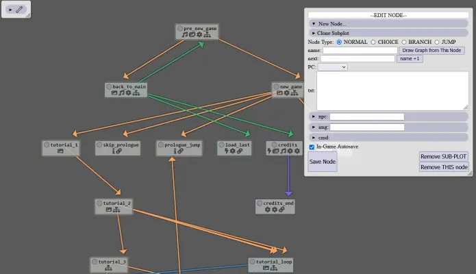
The Editor has 3 main elements - the toolbox in the top left corner, the node
editor on the right and the plot graph taking up the rest of the space.
The Toolbox
When first starting the editor, the toolbox will always be collapsed and
looking something like this:
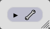
Clicking on the toolbox will expand it (and this is true for all the widgets in the editor that have
that little triangle at one side)
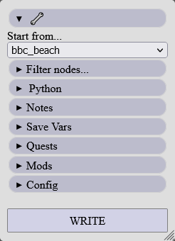
'Start from...' tells the editor what node to draw at the top of the node graph, or in other words -where to start from.
The dropdown here will list all the nodes that don't have a direct parent (ancestor), these are nodes
that the player will probably move to through a jump node (a node with eval_jump_to).
It is recommended not to create cycling reference in the first node of a subplot. The first node can lead to as many
other nodes as you like, but no node should connect back to that starting node.
If you would create a plot graph such that 'node_a' leads to 'node_b' and 'node_b' leads to 'node_a'
neither of these nodes would be listed in the 'Start from...' dropdown and both could become inaccessible
in the editor.
Filter nodes...
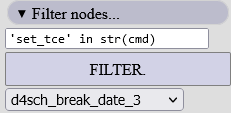
This tool allows to one to write a custom rule and filter out all the nodes that fit the rule.
For example if you need to find all the nodes that use the image 'img/npc/dude6.png' you could write:
npc == 'img/npc/dude6.png' and click FILTER to get a list of nodes in the dropdown
below (selecting an item from the dropdown will draw the graph from that node).
The function doing the filtering brings in the fields from each node into the local scope. You can use any of them directly
- text
- next
- pc
- npc
- img
- eval_jump_to
- branch (as a list)
- choice (as a list)
- cmd (as a list)
Python
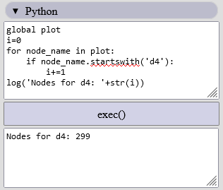
Here you can execute your custom Python script right in the editor.
The top text area is meant for your script and the bottom one is where the
log() function prints it's output.
This is a feature meant for advanced users and might be hard to use for anyone not intimately familiar
with the inner workings of the editor.
Notes
This is a text input area for your notes. You can write anything you want here, it will be saved in the plot.txt file.
Save Vars
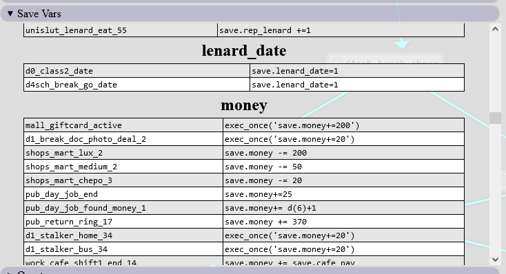
This section list all nodes that write anything to the save DataStore and groups them by the variable name.
It is not always perfectly accurate.
Quests
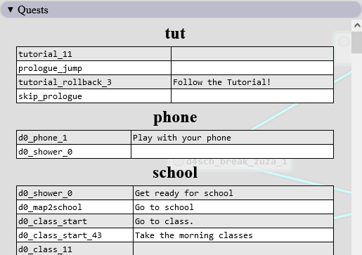
This section lists all the nodes that add or update the quest log.
Mods
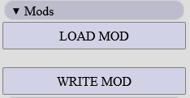
LOAD MOD
Clicking this button will allow you to load a previously saved mod. Because of the flexibility
of mods not all of them can be guaranteed to load properly.
The editor executes the mod in a separated namespace and retrives 'data.plot' from that namespace
as modified by the mod. If a mod is implemented in a way that relies on 'data.plot' to have specific
keys and values, that mod may fail to load in the editor.
The recommended way to create plot mods is to update 'data.plot' in place eg.:
mod_plot = {} # the data to be inserted
for k,v in mod_plot.items():
data.plot[k] = v
WRITE MOD
Clicking this button will save the changes you've made to the plot as a mod file, that can be loaded via the mod manager.
Config
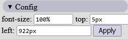
In this section you can change the position and font size of the Node editor. Usefull on mobile
and touchscreens where one can't just drag or resize the Node Editor panel.
WRITE
Clicking this button will generate a plot.txt file and ask the user to save it (depending on
browser and configuration, it may ask for a name and destination or just write the file to a default location)
Node Editor
The node editor is located on the right side of the window, but it's position can be
changed by simply clicking on the header (part of the editor that says --EDIT NODE--) and
dragging the whole thing to wherever you want.
Just like the toobox the node editor can be minimized/collapsed.
Most input fields in the node editor provide hints. These can be names of existing nodes,
image filenames, npc images or sometimes Python functions or snippets
The editor also supports drag and drop for input fields that require a node name (next, targets). You can
drag a node from the node graph into a input field to automatically fill it out with the name of the node.
Node Type
The editor has 4 types of nodes:
- Normal
- Choice
- Branch
- Jump
A normal node is any node that has a 'next' field, a choice node is one that has a choice field, and so one.
The engine does not make this kind of distinction, but since a choice node shouldn't have a next field and a
branch node is not supposed to have text, it is only logical to have some sort of mechanism in the editor
to minimize potential user errors.
Switching between the node types is done by clicking on one of the radio buttons with the nodae type names.
This will hide or show fields appropriate for the given node type.
It is important to note that this is just a editor feature, and the underlying plot node can have
all the fields filled no matter what type of node the editor thinks the node is.
The editor will not try to guess the type of a node when editing an existing node, so the fields visible
when first vieeing a nodes properties may be wrong and you may need to manually switch the node type
to see the content of the nodes fields.
Common elements
Depending on the type of node, the editor may display a different set of widget, but no matter
what type of node you are creating or edditing, all of them share some common elements.
Draw Graph from This Node button
As the name suggest, pressing this button will draw the plot graph from the current node.
name
name is the unique identifier of a node, it's id, the key under which it is stored in the plot graph.
If you edit a node and change its name, the changes will be saved under this new name, leaving the
original node unchanged.
It is up to the author to keep the names unique, as the editor will override any existing nodes
without asking if there are any node name conflicts.
cmd
Commands are common to all nodes and one node can have a virtually unlimited number of commands.
Clicking the '+ New CMD' button will add another input field where you can type in your
Python expressions.
Save Node button
Clicking this button will save all the changes you have made to the node and re-draw the plot graph.
The editor will also create new, empty nodes if you've specified next nodes or target nodes that don't exist.
The changes are saved in the browsers memory, you still need to save the changes to a file (write).
Remove Sub-Plot button
Clicking this button will remove the current node and will also try to remove any and all of it's
descendants.
Remove THIS node button
This will remove the current node as well as removing all reference to it from it's direct ancestors.
In-Game Autosave tickox
In the rare occasion you want to disable autosave for a specific node, you can un-tick this tickbox.
Clone subplot
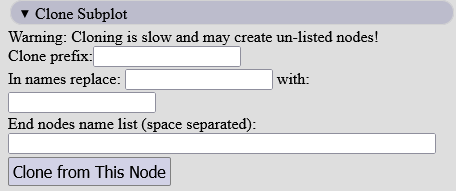
This is an experimental feature that lets one clone multiple nodes at once and insert them
right back into the plot graph under different names.
NODE TYPES:
Normal node
A normal node has the following fields:
- name (required) - unique id of the node
- next - (usually required) name of the next node in the node graph
- PC - state/look of the player avatar/paperdoll (hidden if blank)
- txt - (usually required) Text visible to the player
- npc - NPC avatar/paperdoll
- img - background image
- cmd - commands run when the node is shown
All fields except the name are optional. The name needs to be unique, if you save a node using a name
that some other node already has - the editor will override the existing node without asking.
The 'name +1' button will automatically generate a new name for the next node based on the current node name.
If the current node name ends with a underscore and a number (like some_node_69),
the name for the next button will be generated by adding +1 to that trailing number
( some_node_70). For node names without numbers the generated next node name will have '_1'
at the end (some_node ==> some_node_1.
The next field can be skipped only if calling show_map() in the cmd
or some other similar function that provides an alternative way of moving to other nodes.
The txt field should be blank only if calling shop() or
change_clothes() or some other function providing an alternative
way of progressing to the next node. It should also be left blank when using
show_map().
Note: In normal gameplay the player needs to click somewhere on the text panel to progress to the next node,
so if thereis no text, there is nothing that the player can click.
The npc and img fields have a built-in preview option, one just needs to expand that field.
Choice node
A choice node is very similar to a normal node, with the only
change being that the next field is replaced with the choice fields.
The choice fields is an array of 8 rows of 3 input fields each. These represent the
conditions, labels and targets for each of the choices shown to the player.
Choice is described in detail in it's own section, refere to that for further information.
Branch
Branch at first glance is very similar to Choice, but it is quite different. It has no txt, no npc.
The branch fields only have a condition and target and no label. Unlike choice there is no maximum
number of branches in a node and one can add as many as needed by pressing the '+New Branch' button.
Branch is described in detail in it's own section, refere to that for further information.
Jump
The set of fields for a jump node is almost identical to that of a branch node, with only the branch fields
replaced with one eval_jump_to field.
Jump is described in detail in it's own section... You know the drill by now...
Plot graph
The plot graph takes up the majority of the editor window. Each plot node is represented by a small,
colored rectangle. Arrows show how the nodes are connected. Each node has a small, round button (nub) next to its name, clickin it will
select the node and load it into the node editor.
When a node is selected the editor highlights it's direct ancestor all it's descendants and fades out
all the nodes that can no longer be reached from the selected node.
Depending on the content of a node, additional icons can be displayed under the nodes name.
These help to find nodes with branches, commands, images, pc or npc. Hovering the mouse cursor
over one of those icons usually give extra informations without the need to select the node and
look through its fields.
[Back to top]
Item Editor
dev/item_editor.html
This is a tool designed to edit and preview existing clothes. It can also be used to assign items to shop, but a more specialized tool for that also exists.
One might need to edit this tool to add/remove custom item tags suitable for each game.
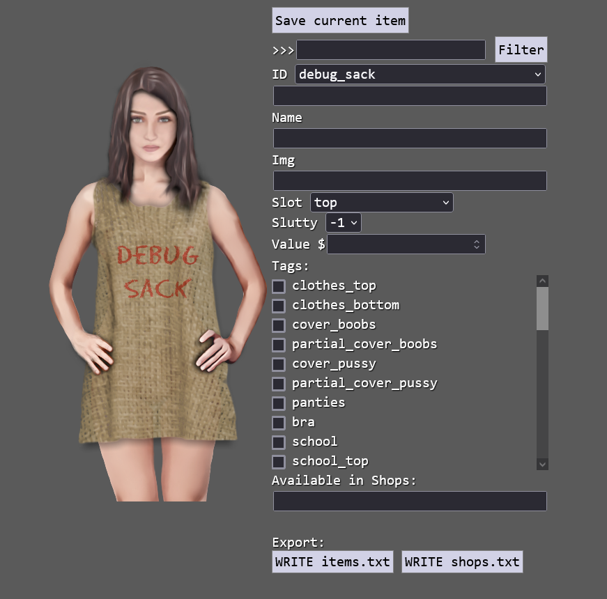
[Back to top]
Item Maker
dev/item_maker.html
This is a tool designed to create new clothing items from image files. It doesn't save the output to a file, but offers it in a text field so that it can be copy/pasted into data/items.txt
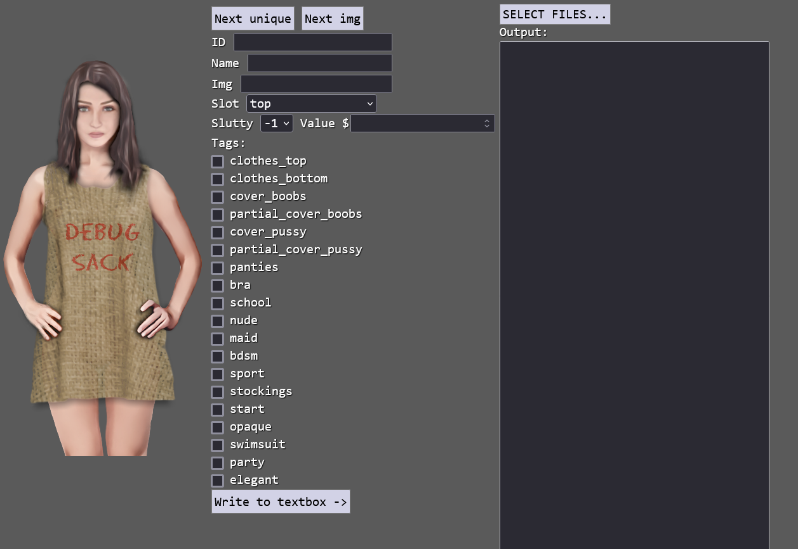
[Back to top]
Shop Editor
dev/shop_editor.html
This is a tool designed to edit the content of shops.
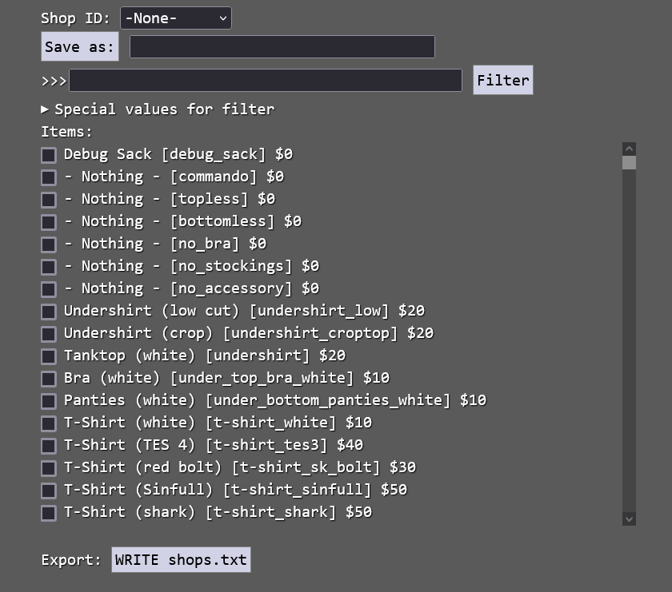
[Back to top]
Mod Manager
dev/mod_manager.html
This is a tool meant to be used by end users/players. It allows to load mods from .py files and determine in what order they are loaded by the game.
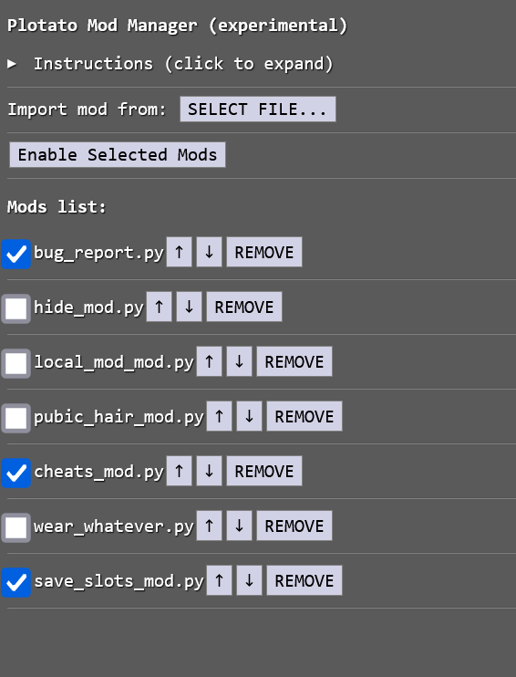
[Back to top]
Python scripts
dev/make_datalist.py
This script generates datalists (hints) for plot_editor.html. Copy/paste the output.
dev/make_doc.py
This script generates rough API documentation in html format based on function docstrings.
dev/svg_gen.py
This script generates colored dots and arrows as used by the plot_editor.html. It is dummy stupid.
dev/webpy.py
Script to convert a dir of images(png/jpg) to .webp files, libwebp needs to be installed and present (on path).
Usage:
python webpy.py source_dir [target_dir] [cwebp_args]
[Back to top]
API
Most of the engines code is organized into functions, classes are avoided, unless they can provide some useful features.
This is a deliberate design choice, that minimizes the amount of redundant typing -it's simpler, smaller, faster, better (?) to write music('oh_my') then for example game.audio.music('oh_my'). Those few extra letters might not seem much, but repeated thousands of times in the plot.txt file could add megabytes of bloat.
Some parts of the engine could be simplified or improved if some standard Python library modules where used, unfortunately importing these modules from Brython require the browser to download and process multiple megabytes of javascript - something that probably best be avoided.
All functions that start with an underscore (like _on_choice_click()) are 'private' functions, implementation details that most game authors needn't to worry about. One shouldn't use them from inside a cmd fields in a plot node.
Public API:
CONSTANTS:
TIME.NIGHT =
0 # 0-3
TIME.MORNING =
1 # 4-7
TIME.NOON =
2 # 8-11
TIME.MIDDAY =
3 # 12-15
TIME.AFTERNOON =
4 # 16-19
TIME.EVENING =
5 # 20-23
TIME.MONDAY =
0
TIME.TUESDAY =
1
TIME.WEDNESDAY =
2
TIME.THURSDAY =
3
TIME.FRIDAY =
4
TIME.SATURDAY =
5
TIME.SUNDAY =
6
ERROR FEEDBACK:
show_error( txt, do_clear=
False ):
Show a error message, if clear is True old error msg are removed
UTILITY FUNCTIONS:
add_mod_cfg( name, buttons ):
Adds a div with the mod name and buttons to the mods config screen
buttons' should be a dict with the text as the key and the command as the value
clamp( x, min_val, max_val ):
returns the value of x constrained to the range min_val to max_val.
open_url( url, new_tab=
True ):
Opens/redirects to an URL.
If new_tab is True it will be opened in a new tab/window(?)
RANDOM:
random( ):
Returns a random float in 0.0-1.0 range,
uses javascript Math.random
randint( start, stop=
None ):
Returns a random int in start-stop range,
Note: 'start' and 'stop' are included in the results eg.:
randint(1,6) may return 1, 2, 3, 4, 5 or 6!
uses javascript Math.random
random_choice( input_list, weights=
None ):
Returns a random element from the input_list
weights is a optional list of integer weights
random_choice_adv( name, weights, static_weights_bonus=
None ):
Returns a weighted random element from the weights dict
eg.{'a':10,'b':5,'c':1} returns 'a' in 62.5%, 'b' in 32.25%, 'c' in 6.25%
After each call the chosen weights are reduced by 1 (to a minimum of 1).
name' is the prefix used for storing previous results.
When all weights become equal the wights reset to the initial value.
The same item can't be chosen twice in a row.
if static_weights_bonus is provided, its values are added to the weights dict
chance( p ):
Returns True in 'p'% cases,
p' should be in the 0-100 range
d( sides, num=
1 ):
Rolls a die with 'sides' number of sides, eg. d(6),
to roll multiple dice pass in a num eg. D&D '4d6' would be d(6, 4)
PERSISTENT STORAGE:
class
DataStore(object):
exists( cls, name ):
Returns true if a DataStore with the given name exists
add_item( self, name, value=
'' ):
Set name to value, same as self[name]=value
set_list( self, key, input_list ):
Stores the input_list as a string
get_list( self, name ):
Returns a value as if it was a list
append_list( self, name, value ):
Appends an item to a list stored using set_list()
Creates a new list if needed
del_from_list( self, list_name, value ):
Remove an item from a list stored using set_list()
is_empty( self ):
Returns True if there are no keys in the db
items( self ):
Returns an iterator over the key and values
clear( self, subprefix=
None ):
Removes keys and values
if subprefix is not empty only removes keys that starts with subprefix
add_flag( self, key, value ):
Adds a flag to a key name.
Use has_flag() to check if the flag has been set.
has_flag( self, key, value ):
Checks if value flag has been set under the key name
get_flags( self, key ):
Returns a list of flags set under the key name.
remove_flag( self, key, flag ):
Removes flag (or multiple flags if flag is a set)
remove( self, *keys ):
Removes a key(s) from the DB
to_string( self ):
Returns a string with all the values of the DataStore,
this is the internal representation of the data
from_string( self, input_string, clear_old=
True ):
Recreates the DataStore values from the input_string,
the input_string should be one generated by DataStore.to_string()
IN-GAME TIME:
set_tce( target, day, hour, map_poi, map_redirect ):
Set a Time Critical Event (tce) that will start on the given 'day' and 'hour'.
target' is the name of the plot node that the player will jump to.
the event will trigger when moving via the map,
the map_poi must be one of the known Points Of Interest,
when the player clicks it at the right time ('day', 'hour') it will jump
to the 'target' plot node. Clicking any other poi will jump to 'map_redirect
If a TCE is set, the in-game clock will never (normally) progress past day*24+hour,
until the event is resolved.
Only 1 (one) TCE can be set for a given day, hour.
remove_tce( day=
None, hour=
None ):
Removes (cancels) a TCE.
Called automatically when a TCE is triggered from map.
If day is None and hour is None the current time (save.time) is used
get_tce_arg( tce, arg_name ):
Returns the arguments used for creating the given TCE.
tce must be a list as returned by get_tce()
valid arg_name values: 'target', 'day', 'hour', 'map_poi', 'map_redirect
get_tce( timestamp =
None ):
Returns the [target, day, hour, map_poi, map_redirect]
set for a TCE with the given timestamp (day*24+hour)
if timestamp is None - the current time (save.time) is used
if there is no TCE with the timestamp - returns None
get_hour( ):
Returns the current hour
get_weekday( ):
Returns the day of the week as an int
is_weekday( weekday ):
Returns True if today is 'weekday
eg.: 'is_weekday(TIME.MONDAY)
To test if it's a 'work day' use 'not is_weekend()
is_weekend( ):
Returns True if it's SATURDAY, SUNDAY or FRIDAY AFTERNOON
get_datetime( ):
Returns (day, hour)
get_day( ):
Returns the current day number (starting from 0)
is_time_of_day( *time_of_day_list ):
Returns True if the current time of day is in the time_of_day_list
eg: 'is_time_of_day(TIME.MORNING, TIME.NOON)
is_day( ):
Returns True if it's MORNING, NOON, MIDDAY, or AFTERNOON
get_time_of_day( ):
Returns the time of day as an int
set_hard_datetime( day, hour ):
Set the in game time, ignoring everything
get_day_name( future_day=
0, exact_day=
None ):
Returns the (string) name of the current day
if future_day is provided it returns the name
of the day future_day days away
get_time_of_day_name( use_in_at=
False ):
Returns the time of day as a string
set_time_of_day( time_of_day ):
Sets the time of day, (usually) moving the time forward.
Note: The actual time is set to the first hour in the give time period,
this may turn the clock back by up to 3h!
eg. if it's 7AM in the morning and you call
set_time_of_day(TIME.MORNING) it will become 4AM
progress_time( amount=
1 ):
Moves the in-game clock by amount hours (int),
also displays the current time/date in the status div
ITEMS/INVENTORY MANAGEMENT:
get_equipped( tag=
None, slot=
None, exclude_tag=
'nude' ):
Returns a list of equipped items
if tag is not None only the items with the tag get returned
if slot is not None only the (one) item in the slot is returned (if any)
no item that has the 'exclude_tag' tag will be returned
get_item_name( item_id, *args ):
Returns the name or names of the given item or items
Note: Parts of the names in parenthesis will be dropped e.g 'Shirt (pink)' -> 'Shirt
For multiple items the names will be comma separated.
give_clothes_by_tag( tag ):
Give all clothes that have the given tag
count_clothes_by_tag( tag, eqquiped_only=
False ):
Returns the number of items the player has with the given tag
if eqquiped_only is True, it checks only equipped items.
has_clothes_by_tag( tag, eqquiped_only=
False ):
Returns True if the player has any items with the given tag
if eqquiped_only is True, it checks only equipped items.
strip_nude( ):
Takes of all the clothes
set_clothes( clothes, *args, **kwargs ):
Gives and equips all the clothes. Additional clothes can be passed
as positional arguments or clothes can be a list
If multiple items in the list share the same slots the last one will be used.
No items are striped before updating the equipment.
Also shows the PC avatar/paperdoll if show_pc (key-word-argument) is True
change_clothes( tag_set=
None, enforce_stats=
1, limited=
False, loopback=
False ):
Alias for shop with no items
shop( shop_id=
None, tag_set=
None, enforce_stats=
1, buyback=
False, discount=
None, limited=
False, loopback=
False ):
Show the shop/wardrobe screen.
shop_id is the name of the shop (see data/shops.txt) or None (for wardrobe)
tag_set - if it's not None, only items that have at least one tag from the tag_set are shown
enforce_stats - if False, the player will be able to wear any combination of clothes regardless of stats.
buyback - if True, the PC can sell all her clothes to the shop, else only the items in the current shopping session (in the shopping cart) can be returned.
discount - all shop prices are multiplied by 'discount' (rounded down)
limited - if True, the available items will be limited to items from the current clothes list (saved using update_current_clothes_list() or auto-saved when the player closes the shop ui)
loopback - if True, the game will return to the plot node shown before the shop opened (used for cheats/debug)
update_current_clothes_list( ):
Update the current clothes list
restore_clothes( ):
Restore previously saved clothes
is_exposed( test_expo, logic=
'any', current_expo=
None ):
Returns True/False depending on current clothes and the given test_expo.
Use the values from the EXPO eg.:
test_expo=EXPO.PUSSY+EXPO.PART_BOOBS
if logic == 'any': returns True if at least one bit matches
if logic == 'all': returns True if all bit match
if logic == 'some': uses RNG, returns True more often if more bits match
get_exposure( tags=
None ):
Returns a int (bitmask) used for checking nudity
match_clothes( test_set ):
Returns the % match between the current clothes and the test_set
as a float in 0.0, 1.0 range.
Note: test_set must be a set!
check_uniform( slots, tags, current_items=
None ):
Check if the clothes_set is a valid uniform.
A uniform is valid if all items in 'slots' have
at least one of the tags in the 'tags' set
get_underwear( ):
Returns a list of currently equiped underwear types, one of:
['bra', 'panties']
['bra']
['panties']
[]
get_equipped_tagset( ):
Returns a set with the tags of the currently equipped clothes
get_clothes_stats( clothes_list ):
Returns a tuple that is the slutiness value of the clothes in the clothes_list
and the name of the uniform type
eg. (7, 'School Uniform')
CREDITS:
start_credits( ):
Fetches the credits txt and starts the credits animation
by default credits are in data/supporters.txt (var credits = ...)
end_credits( ):
End the credits animation
Note: The anim is now run by css, so this just hides an element
IN-LINE TEXT STYLING HELPERS:
S( txt, css ):
Wrapper for creating in-line styling
RED( txt ):
Wrapper for creating in-line styling -color red
B( txt ):
Wrapper for creating in-line styling - bold
I( txt ):
Wrapper for creating in-line styling - italic
Rus( txt ):
Wrapper for creating in-line styling - russian font
CORE FUNCTIONS:
set_quest( quest_name, quest_text=
None ):
Update the questlog setting the visible text to quest_text
set_bodypart_img( bodypart, img_path ):
Change the image for a bodypart
img_path should be the relative path/url to the img
set_body_overlay( img_name=
None, img_path=
'img/pc/' ):
Adds a overlay image on top of the pc image stack
counter_inc( name ):
Increment a persistent counter by 1.
The counter will only be increased once per in-game date/time
counter_get( name ):
Get the value of a counter
exec_once( cmd ):
Run a command once per game/visit-to-node
splash( rgba=
None, mode=
'screen', backdrop_filter=
'none', anim=
'fade_out', time=
1100 ):
Show a overlay with the color, blend mode and filter using the given animation
Note: Firefox has no support for backdrop-filter!
svg_filter( filter_name=
'default' ):
Set a filter on both pc and npc images
Note: Remember to reset the filter!!!
overlay_img( img_url=
None, img_class=
'overlay_blend_screen', clear=
True ):
Adds an overlay image on top of the main image
replace_parallax_img( new_img_url, layer=
0 ):
Replace one (1) image in the parallax image stack,
without resetting the animation
parallax_imgs( *args, **kwargs ):
Add a set of images with scrolling effect,
img_list - image or is a list of images to display.
When multiple images are use they should be passed in back-to-front order,
that is the smallest, most far away image first and the biggest, closes image last.
scroll_dir - should be either 'y' (default) or 'x
if scroll_dir='y' the image(s) will be scrolled from top to bottom
if scroll_dir='x' the image(s) will be scrolled from side to side
Note: This is the CSS implementation, it's very slow on some hardware
num_pc_bodymods( mod_type=
'piercing' ):
Get the number of body modifications the PC currently has
mod_type can be 'piercing' or 'tattoo
add_pc_bodymod( name, img, mod_type=
'piercing' ):
Add a body modifications image
mod_type can be 'piercing' or 'tattoo
This function will silently fail if PC has 3 or more bodymods of that type
show_pc( visible=
True, face=
None ):
Show the pc avatar image with the current clothing and face
update_stats( ):
Updates the player stats
currently adds +1 max_slut for every 4 points of slut
SAVE UTILITIES:
init_new_save( ):
Resets all values in the save and inventory
to the initial values expected by the game.
restore_last( ):
Restore the background npc and pc images to the last saved state
GAME PLOT NAVIGATION:
move_to( target, rollback=
False ):
Moves to the target plot node
if rollback is True, a rollback point is saved
MAP:
add_poi( name ):
Add a Point Of Interest to the list of known POIs
del_poi( name ):
Removes a Point Of Interest to the list of known POIs
show_map( poi_list=
None, show_known=
True ):
Shows the map screen updates the map pins POI
remove_map_event( target, from_poi=
None, target_poi=
None ):
Removes a dynamic map event,
If target is None this will remove ALL map events for the from_poi/target_poi
set_map_event( target, from_poi=
None, target_poi=
None ):
Sets a dynamic map event
AUDIO/MUSIC/TTS:
tts_actor( actor_name ):
Set/override the tts speaker for one text box
Use in formatted text eg. { tts_actor('mnpc') }
music( name, loop=
True ):
Alias for play_music
play_music( url=
None, loop=
True ):
Play a music(.mp3) file using the browsers build-in player
Same Origin Policy applies(?).
All functions:
CONSTANTS:
TIME.NIGHT =
0 # 0-3
TIME.MORNING =
1 # 4-7
TIME.NOON =
2 # 8-11
TIME.MIDDAY =
3 # 12-15
TIME.AFTERNOON =
4 # 16-19
TIME.EVENING =
5 # 20-23
TIME.MONDAY =
0
TIME.TUESDAY =
1
TIME.WEDNESDAY =
2
TIME.THURSDAY =
3
TIME.FRIDAY =
4
TIME.SATURDAY =
5
TIME.SUNDAY =
6
Error feedback:
show_error( txt, do_clear=
False ):
Show a error message, if clear is True old error msg are removed
_clear_error( event=
None ):
Remove a error from the error box
Utility functions:
_restart_anim( element, anim_name=
None, count=
None, duration=
None ):
Change and/or restart the css animation-name of element.
Note: works by replacing the element with (a copy of?) the element
_show( element_id, show=
True ):
Shows (or hides) an dom element with id=element_id
Note: Hidden elements now use 'display: none;' not 'visibility: hidden;' !
add_mod_cfg( name, buttons ):
Adds a div with the mod name and buttons to the mods config screen
buttons' should be a dict with the text as the key and the command as the value
clamp( x, min_val, max_val ):
returns the value of x constrained to the range min_val to max_val.
open_url( url, new_tab=
True ):
Opens/redirects to an URL.
If new_tab is True it will be opened in a new tab/window(?)
Random:
random( ):
Returns a random float in 0.0-1.0 range,
uses javascript Math.random
randint( start, stop=
None ):
Returns a random int in start-stop range,
Note: 'start' and 'stop' are included in the results eg.:
randint(1,6) may return 1, 2, 3, 4, 5 or 6!
uses javascript Math.random
random_choice( input_list, weights=
None ):
Returns a random element from the input_list
weights is a optional list of integer weights
random_choice_adv( name, weights, static_weights_bonus=
None ):
Returns a weighted random element from the weights dict
eg.{'a':10,'b':5,'c':1} returns 'a' in 62.5%, 'b' in 32.25%, 'c' in 6.25%
After each call the chosen weights are reduced by 1 (to a minimum of 1).
name' is the prefix used for storing previous results.
When all weights become equal the wights reset to the initial value.
The same item can't be chosen twice in a row.
if static_weights_bonus is provided, its values are added to the weights dict
chance( p ):
Returns True in 'p'% cases,
p' should be in the 0-100 range
d( sides, num=
1 ):
Rolls a die with 'sides' number of sides, eg. d(6),
to roll multiple dice pass in a num eg. D&D '4d6' would be d(6, 4)
Persistent storage:
class
InMemoryStorage(dict):
__init__( self ):
Create a temp namespace in data.glob
setItem( self, key, item ):
Set the item under the key
getItem( self, key ):
Get the item under the key, returns None on error
class
DataStore(object):
exists( cls, name ):
Returns true if a DataStore with the given name exists
__init__( self, name ):
Setup the instance
inner_dict( self ):
@property
__getitem__( self, key ):
x.__getitem__(y) <==> x[y]
__setitem__( self, key, item ):
Set self[key] to value.
add_item( self, name, value=
'' ):
Set name to value, same as self[name]=value
set_list( self, key, input_list ):
Stores the input_list as a string
get_list( self, name ):
Returns a value as if it was a list
append_list( self, name, value ):
Appends an item to a list stored using set_list()
Creates a new list if needed
del_from_list( self, list_name, value ):
Remove an item from a list stored using set_list()
is_empty( self ):
Returns True if there are no keys in the db
items( self ):
Returns an iterator over the key and values
clear( self, subprefix=
None ):
Removes keys and values
if subprefix is not empty only removes keys that starts with subprefix
add_flag( self, key, value ):
Adds a flag to a key name.
Use has_flag() to check if the flag has been set.
has_flag( self, key, value ):
Checks if value flag has been set under the key name
get_flags( self, key ):
Returns a list of flags set under the key name.
remove_flag( self, key, flag ):
Removes flag (or multiple flags if flag is a set)
remove( self, *keys ):
Removes a key(s) from the DB
to_string( self ):
Returns a string with all the values of the DataStore,
this is the internal representation of the data
from_string( self, input_string, clear_old=
True ):
Recreates the DataStore values from the input_string,
the input_string should be one generated by DataStore.to_string()
__contains__( self, key ):
True if the DataStore has the specified key, else False.
__getattr__( self, key ):
dot access to values hack
__setattr__( self, key, item ):
dot access to values hack
__delitem__( self, key ):
Delete self[key].
Save/load and file writing/reading:
_load_from_file( ev ):
Loads a save from a given file,
needs to be bound to a file input 'input' element
_save_to_file( event=
None ):
Writes a save to a file,
needs to be bound to a 'mousedown' event in a download link element
In-game time:
set_tce( target, day, hour, map_poi, map_redirect ):
Set a Time Critical Event (tce) that will start on the given 'day' and 'hour'.
target' is the name of the plot node that the player will jump to.
the event will trigger when moving via the map,
the map_poi must be one of the known Points Of Interest,
when the player clicks it at the right time ('day', 'hour') it will jump
to the 'target' plot node. Clicking any other poi will jump to 'map_redirect
If a TCE is set, the in-game clock will never (normally) progress past day*24+hour,
until the event is resolved.
Only 1 (one) TCE can be set for a given day, hour.
remove_tce( day=
None, hour=
None ):
Removes (cancels) a TCE.
Called automatically when a TCE is triggered from map.
If day is None and hour is None the current time (save.time) is used
_tce_clamp_time( current_time, target_time ):
Returns the maximum future time between current_time and target_time
that can be set before hitting a Time Critical Event
get_tce_arg( tce, arg_name ):
Returns the arguments used for creating the given TCE.
tce must be a list as returned by get_tce()
valid arg_name values: 'target', 'day', 'hour', 'map_poi', 'map_redirect
get_tce( timestamp =
None ):
Returns the [target, day, hour, map_poi, map_redirect]
set for a TCE with the given timestamp (day*24+hour)
if timestamp is None - the current time (save.time) is used
if there is no TCE with the timestamp - returns None
get_hour( ):
Returns the current hour
get_weekday( ):
Returns the day of the week as an int
is_weekday( weekday ):
Returns True if today is 'weekday
eg.: 'is_weekday(TIME.MONDAY)
To test if it's a 'work day' use 'not is_weekend()
is_weekend( ):
Returns True if it's SATURDAY, SUNDAY or FRIDAY AFTERNOON
get_datetime( ):
Returns (day, hour)
get_day( ):
Returns the current day number (starting from 0)
is_time_of_day( *time_of_day_list ):
Returns True if the current time of day is in the time_of_day_list
eg: 'is_time_of_day(TIME.MORNING, TIME.NOON)
is_day( ):
Returns True if it's MORNING, NOON, MIDDAY, or AFTERNOON
get_time_of_day( ):
Returns the time of day as an int
set_hard_datetime( day, hour ):
Set the in game time, ignoring everything
get_day_name( future_day=
0, exact_day=
None ):
Returns the (string) name of the current day
if future_day is provided it returns the name
of the day future_day days away
get_time_of_day_name( use_in_at=
False ):
Returns the time of day as a string
set_time_of_day( time_of_day ):
Sets the time of day, (usually) moving the time forward.
Note: The actual time is set to the first hour in the give time period,
this may turn the clock back by up to 3h!
eg. if it's 7AM in the morning and you call
set_time_of_day(TIME.MORNING) it will become 4AM
progress_time( amount=
1 ):
Moves the in-game clock by amount hours (int),
also displays the current time/date in the status div
Items/inventory management:
get_equipped( tag=
None, slot=
None, exclude_tag=
'nude' ):
Returns a list of equipped items
if tag is not None only the items with the tag get returned
if slot is not None only the (one) item in the slot is returned (if any)
no item that has the 'exclude_tag' tag will be returned
get_item_name( item_id, *args ):
Returns the name or names of the given item or items
Note: Parts of the names in parenthesis will be dropped e.g 'Shirt (pink)' -> 'Shirt
For multiple items the names will be comma separated.
give_clothes_by_tag( tag ):
Give all clothes that have the given tag
count_clothes_by_tag( tag, eqquiped_only=
False ):
Returns the number of items the player has with the given tag
if eqquiped_only is True, it checks only equipped items.
has_clothes_by_tag( tag, eqquiped_only=
False ):
Returns True if the player has any items with the given tag
if eqquiped_only is True, it checks only equipped items.
_buy_item( event ):
Fired when PC buys new clothing,
the item id is embedded in the button/event id
_sell_item( event ):
Fired when PC sells clothing,
the item id is embedded in the button/event id
_update_clothing( tag_set=
None, limited=
False ):
Update the clothing selection and draw the current clothes on the avatar
strip_nude( ):
Takes of all the clothes
set_clothes( clothes, *args, **kwargs ):
Gives and equips all the clothes. Additional clothes can be passed
as positional arguments or clothes can be a list
If multiple items in the list share the same slots the last one will be used.
No items are striped before updating the equipment.
Also shows the PC avatar/paperdoll if show_pc (key-word-argument) is True
_on_shop_filter( event ):
Filter the items displayed in shop
change_clothes( tag_set=
None, enforce_stats=
1, limited=
False, loopback=
False ):
Alias for shop with no items
shop( shop_id=
None, tag_set=
None, enforce_stats=
1, buyback=
False, discount=
None, limited=
False, loopback=
False ):
Show the shop/wardrobe screen.
shop_id is the name of the shop (see data/shops.txt) or None (for wardrobe)
tag_set - if it's not None, only items that have at least one tag from the tag_set are shown
enforce_stats - if False, the player will be able to wear any combination of clothes regardless of stats.
buyback - if True, the PC can sell all her clothes to the shop, else only the items in the current shopping session (in the shopping cart) can be returned.
discount - all shop prices are multiplied by 'discount' (rounded down)
limited - if True, the available items will be limited to items from the current clothes list (saved using update_current_clothes_list() or auto-saved when the player closes the shop ui)
loopback - if True, the game will return to the plot node shown before the shop opened (used for cheats/debug)
update_current_clothes_list( ):
Update the current clothes list
restore_clothes( ):
Restore previously saved clothes
_close_shop( event=
None ):
Close the current shop, jump back to the plot-line
is_exposed( test_expo, logic=
'any', current_expo=
None ):
Returns True/False depending on current clothes and the given test_expo.
Use the values from the EXPO eg.:
test_expo=EXPO.PUSSY+EXPO.PART_BOOBS
if logic == 'any': returns True if at least one bit matches
if logic == 'all': returns True if all bit match
if logic == 'some': uses RNG, returns True more often if more bits match
get_exposure( tags=
None ):
Returns a int (bitmask) used for checking nudity
match_clothes( test_set ):
Returns the % match between the current clothes and the test_set
as a float in 0.0, 1.0 range.
Note: test_set must be a set!
check_uniform( slots, tags, current_items=
None ):
Check if the clothes_set is a valid uniform.
A uniform is valid if all items in 'slots' have
at least one of the tags in the 'tags' set
get_underwear( ):
Returns a list of currently equiped underwear types, one of:
['bra', 'panties']
['bra']
['panties']
[]
get_equipped_tagset( ):
Returns a set with the tags of the currently equipped clothes
_get_slut_delta_str( item_name ):
Returns string representing the sluttiness value of an outfit,
that is composed of what the PC is currently wearing + the 'item_name' item
get_clothes_stats( clothes_list ):
Returns a tuple that is the slutiness value of the clothes in the clothes_list
and the name of the uniform type
eg. (7, 'School Uniform')
_update_clothes_stats( blink=
True ):
Update the stats and tags for the currently worn clothes
_on_equip( event ):
Fired when the pc changes clothing
_update_outfits( tag_set=
None, limited=
False ):
Update the list of known outfits
_del_outfit( event ):
Remove the outfit encoded as event.target.id
_use_outfit( event ):
Change the current clothes to the outfit encoded as event.target.id
_add_outfit( name, items=
None ):
Add an outfit to the list of known outfits
if items is None the currently used items will be saved
Credits:
start_credits( ):
Fetches the credits txt and starts the credits animation
by default credits are in data/supporters.txt (var credits = ...)
_next_credit( event=
None ):
Shows the next line of credits
if there are no more lines of credits - summons Cthulu
end_credits( ):
End the credits animation
Note: The anim is now run by css, so this just hides an element
In-line text styling helpers:
S( txt, css ):
Wrapper for creating in-line styling
RED( txt ):
Wrapper for creating in-line styling -color red
B( txt ):
Wrapper for creating in-line styling - bold
I( txt ):
Wrapper for creating in-line styling - italic
Rus( txt ):
Wrapper for creating in-line styling - russian font
Core functions:
_run_modal_cmd( cmd ):
Run the command bound to the ok button of a modal and hide the modal
_show_modal( header_txt, body_elements, ok_cmd, cancel_cmd=
None, ok_txt=
'OK', cancel_txt=
'CANCEL' ):
Show a modal dialog box with ok/cancel buttons header_txt and body_elements
ok_cmd is executed when the player clicks on 'ok
_show_modal_input( text, default_value, ok_cmd ):
Show a modal dialog box with ok/cancel buttons and a text input box
ok_cmd is executed when the player clicks on 'ok
set_quest( quest_name, quest_text=
None ):
Update the questlog setting the visible text to quest_text
_update_questlog( event=
None ):
Updates the questlog and shows in on the screen
_toggle_txt( event=
None ):
Show/hide the main text box if there is text in it,
also updates the menu button text appropriately
set_bodypart_img( bodypart, img_path ):
Change the image for a bodypart
img_path should be the relative path/url to the img
set_body_overlay( img_name=
None, img_path=
'img/pc/' ):
Adds a overlay image on top of the pc image stack
counter_inc( name ):
Increment a persistent counter by 1.
The counter will only be increased once per in-game date/time
counter_get( name ):
Get the value of a counter
exec_once( cmd ):
Run a command once per game/visit-to-node
_on_keydown( event ):
Fired when player presses a key on the keyboard
splash( rgba=
None, mode=
'screen', backdrop_filter=
'none', anim=
'fade_out', time=
1100 ):
Show a overlay with the color, blend mode and filter using the given animation
Note: Firefox has no support for backdrop-filter!
svg_filter( filter_name=
'default' ):
Set a filter on both pc and npc images
Note: Remember to reset the filter!!!
overlay_img( img_url=
None, img_class=
'overlay_blend_screen', clear=
True ):
Adds an overlay image on top of the main image
replace_parallax_img( new_img_url, layer=
0 ):
Replace one (1) image in the parallax image stack,
without resetting the animation
parallax_imgs( *args, **kwargs ):
Add a set of images with scrolling effect,
img_list - image or is a list of images to display.
When multiple images are use they should be passed in back-to-front order,
that is the smallest, most far away image first and the biggest, closes image last.
scroll_dir - should be either 'y' (default) or 'x
if scroll_dir='y' the image(s) will be scrolled from top to bottom
if scroll_dir='x' the image(s) will be scrolled from side to side
Note: This is the CSS implementation, it's very slow on some hardware
_show_new_img( new_img_url, style_class=
'main_img' ):
Shows a new image,
new_img_url' is the path/url to the new image
style_class' is the name of the css class
fading or other animations are done by css
this fires _del_old_img() with a delay
_del_old_img( event=
None ):
Removes bottom img
_show_txt( txt=
False ):
Updates the text in 'main_txt',
if txt is False/None the text box will be hidden
_show_npc( npc_img ):
Show or hide the npc image
num_pc_bodymods( mod_type=
'piercing' ):
Get the number of body modifications the PC currently has
mod_type can be 'piercing' or 'tattoo
add_pc_bodymod( name, img, mod_type=
'piercing' ):
Add a body modifications image
mod_type can be 'piercing' or 'tattoo
This function will silently fail if PC has 3 or more bodymods of that type
show_pc( visible=
True, face=
None ):
Show the pc avatar image with the current clothing and face
update_stats( ):
Updates the player stats
currently adds +1 max_slut for every 4 points of slut
_apply_url_param( key, value=
None ):
Do something based on the parameters passed in via the url
checksum( chsm=
3865, trg=
'chsm' ):
Run a checksum test
Save utilities:
init_new_save( ):
Resets all values in the save and inventory
to the initial values expected by the game.
_cleanup_save( ):
Clean up save from all unused data
restore_last( ):
Restore the background npc and pc images to the last saved state
_set_is_cheer( ):
helper func
_set_is_not_cheer( ):
helper func
Game plot navigation:
_add_choice( label, condition, target, rollback=
True ):
If eval(condition) is True:
Adds a new choice button with label text, pointing to target node.
Calling this function also hides the character sheet and button.
_restore_rollback( event=
None ):
Restores the rollback from a save
_on_choice_click( target, rollback, label ):
Executed when player clicks on a choice button
move_to( target, rollback=
False ):
Moves to the target plot node
if rollback is True, a rollback point is saved
_move_to_next( event=
None ):
Moves to the next plot node
Map
add_poi( name ):
Add a Point Of Interest to the list of known POIs
del_poi( name ):
Removes a Point Of Interest to the list of known POIs
show_map( poi_list=
None, show_known=
True ):
Shows the map screen updates the map pins POI
_add_marker( label, icon, target, x, y ):
Adds a marker to the map screen
remove_map_event( target, from_poi=
None, target_poi=
None ):
Removes a dynamic map event,
If target is None this will remove ALL map events for the from_poi/target_poi
set_map_event( target, from_poi=
None, target_poi=
None ):
Sets a dynamic map event
_get_map_event( from_poi, target_poi ):
Returns a map event based on the current location, target, time, random etc
If no suitable event exists returns None
_on_marker_click( event ):
Fired when player clicks on a map marker,
EITHER moves to the plot node encoded in the event.target.id
OR moves to a map event
Audio/music/tts:
tts_actor( actor_name ):
Set/override the tts speaker for one text box
Use in formatted text eg. { tts_actor('mnpc') }
_make_voice_select( actor_name ):
Creates some html tags for the user to select tts voices
_show_tts_setup( event=
None ):
Toggles the tts setup panel
_set_tts_pitch( event ):
Set the pitch for a specific actor voice,
the actor name is encoded in the event
_set_tts_speed( event ):
Set the speed/rate for a specific actor voice,
the actor name is encoded in the event
_set_tts_lang( event ):
Sets the tts language(?)
_set_tts_voice( event ):
Set the name of a specific actor voice,
the actor name is encoded in the event
_test_voice( event ):
Use the specific actor voice/pitch/speed setup to speak a test sentence.
_save_tts_volume( event=
None ):
Fired when the user changes tts volume
Saves the current volume value to the storage
_speak( text, speaker=
'default' ):
Use TTS to convert the 'text' to audio
_save_music_volume( event=
None ):
Fired when the user changes music volume
Saves the current volume value to the storage
music( name, loop=
True ):
Alias for play_music
_on_end_music_loop( event=
None ):
Event that loops the music if it ends.
play_music( url=
None, loop=
True ):
Play a music(.mp3) file using the browsers build-in player
Same Origin Policy applies(?).
Zoom functions:
_on_resize( event=
None ):
Resets zoom and updates sizes when the browser window is resized
_reset_zoom( event=
None ):
Reset the font and image zoom to default values
_set_zoom( zoom_level ):
Set the zoom level to zoom_level
_set_font_zoom( zoom_level ):
Set the font zoom to zoom_level%, use int as zoom_level
_zoom( event=
None ):
Change the size of the game area, keeping font size
_zoom_font( event=
None ):
Change the font size
[Back to top]